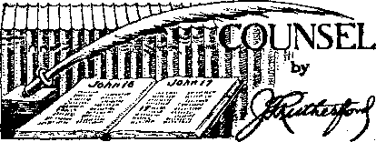

Contents
Smoke-Screen (Part 1)
Hierarchy Admits Fascist Alliance Hitler Reveals Order
Fight “in Franco’s Way”—Coughlin
British Comment
Sir Oswald Mosley
Growth of Fascism
Bureaucratic Rule in Britain
Jews in Britain
Irish Terrorists
Counsel by J. F. Rutherford
The Snare
Manton’s Trail of Human Wreckage
Under the Totalitarian Flag
Crucial Point
Heil Chester Gannon!
Patriotism by Force
Bowing Before the Hierarchy
Typical Quebec Hypocrisy Where Goes New Zealand ?
New Government
Hierarchy in Southern Rhodesia To the Jesuitized Hitlerites Kingdom News From France Jehovah’s witnesses in Quebec
Index to Volume XX of Consolation
Appetizers
3 Answer
7 pw/'Tx The prim spinster was dining out,
§ •? Vr 3^ and while the waiter was standing
by the table she asked him to find 13 out the title of the piece the or-
13 ■“ chestra was playing.
13 Other duties claimed the waiter for a time, 14 and ■when he returned the spinster had for-15 gotten her request. To her confusion the waiter bent towards her and whispered:
16 “What Can I Do to Make You Love Me?”— 19 Answer's magazine.
20 Freer’s Fearful Phrase*
20
20 If you think you can speak your native
21 language well, just read the following words,
22 commit them to memory, and then say them
24 aloud three times in quick succession:
A school coal-scuttle: a scuttle of school
25 coal.
He sniffs shop snuff. They sniff shop snuff.
A bloke’s back brake-block broke.
Are you copper-bottoming them? No, I’m aluminuming ’em, mum.
Published every other Wednesday by WATCHTOWER BIBLE AND TRACT SOCIETY, INC.
117 Adams St., Brooklyn, N. Y.. U. S. A.
Editor Clayton J. Woodworth
Business Manager Nathan H. Knorr
Five Cents a Copy
11 a year In the United States
11.25 to Canada and all other countries
NOTICE TO SUBSCRIBERS
Remittances: For your own safety, remit by postal or express money order. When coin or currency is lost in the ordinary malls, there is no redress. Remittances from countries other than those named below may be made to the Brooklyn office. but only by International postal money order.
Receipt of a new or renewal subscription will be acknowledged only when requested. Notice of Expiration Is sent with the journal one month before subscription expires. Please renew promptly to avoid loss of copies. Send change of address direct to us rather than to the post office. Your request should reach us at least two weeks before the date of issue with which It Is to take effect. Send your old as well as the new address. Copies will not be forwarded by the post office to your new address unless extra postage Is provided by you.
Published also In Afrikaans, Bohemian, Danish, Dutch. Finnish, French, German. Greek. Hungarian. Japanese, Norwegian. Polish, Portuguese. Spanish. Swedish. Ukrainian; also special Australian edition In English.
OFFICES FOR OTHER COUNTRIES
England 34 Craven Terrace. London. W. 2
Canada 40 Irwin Avenue. Toronto 5. Ontario
Australia 7 Beresford Road. Strathfield. N S W. South Africa 623 Boston House. Cape Town
Entered as second-class matter at Brooklyn. N. Y., under the Act of March 3, 187$.
Somewhat Behind
At one time, during a season of heavy fog, a London paper offered a prize for the best fog story. This won the prize:
A merchant received a telephone message one morning from one of his clerks. “Hello, Mr. Smith!” said the clerk. “I cannot come down to the shop this morning on account of the fog. I have not yet arrived home yesterday.”
Needed Help
He was, in fact, the absent-minded professor, and he was strap-hanging in a trolley car. The other arm clasped half a dozen bundles. He swayed to and fro. Slowly his face took on a look of apprehension.
“Can I help you, sir?” asked the conductor.
“Yes,” said the professor, with relief. “Hold on to this strap while I get my fare out.”
And Fed Mother Cary’s Chicken*
Captain: “Have you cleared the decks and burnished the brass?”
Seaman: “Ay, ay, sir. And I’ve swept the horizon with a telescope.”
“And in His name shall the nations hope.”—Matthew 12:21, A.R.V.
Volume XX Brooklyn, N. Y., Wednesday, September 20, 1939 Number 522
Smoke-Screen (in two parts-part d
THE smoke-screen has been very effective in modern warfare. Many successful offensives have been executed under baffling clouds of vapor produced both on land and on sea to hide or camouflage the objective. The logic behind the use of this device or maneuver is simple, yet deadly: If you do not know where to shoot, defense is impossible. Of course, in the practices of war only partial deception by the smoke-screen was generally accomplished. But history furnishes abundant evidence that in many instances this gave victory to the offensive.
What is here given consideration is not the smoke barrage of military usage, but its counterpart in the news. Here its usage is similar, and often more deadly than bullets. Briefly, the purpose of what is termed the “smoke-screen” in the propagandized press is to cover up or conceal the real objectives of an organization or a movement. Its most devastating effect comes from its use in publications or newspapers considered by the public to be impartial; here it is a weapon of terrible viciousness, incalculable in its power to shield from view the group who employ it. Just as in its use in military strategy, before opponents have found exactly where to focus the counterattack much of the damage has already been done.
Production of such newspaper fog for deceitful purposes has become a fine art on the part of certain propagandists of the world. The first requisite is the ability and willingness to lie; and the second is a medium accredited by the public, which is to be bamboozled, a medium or news agency which is not likely to poke its nose where it ought not or make a genuine endeavor to uncover the facts. For the latter the American press answers the conditions admirably for the propagandist. As for the first requisite, mastery of lying, there is one institution which has a pre-eminent SEPTEMBER 20, 1939 record in this art of many centuries standing, namely, the Roman Catholic Hierarchy. It fol low’s, therefore, that in a study of this more or less modern use of deception, the champion liars should be considered first, and this in connection with the American and other press systems.
A few' examples will perhaps clarify the usage of the term “smoke-screen” as applied to press accounts or the news. It has been circulated and repeated enough now to have wide credence in America that the Nazis are viciously persecuting the Catholics in Germany and Austria.1 Without even considering the evidence these reports can be readily discredited by observing the absolute harmony between Franco, “the savior of the faith,” Hitler, Mussolini and the pope. When the evidence is added to the examination, note that Catholic writers who have visited Germany and even Hitler himself, who is a devout Catholic, testify to the exact contrary. A photograph reproduced in Consolation No. 515 show’s the German dictator coming out of a Catholic chur^i, head bowed and hat in hand. But here lies the devastating effect of this type of smoke-screen: The people have already accepted the lie that Catholics are persecuted in Germany, their minds are made up, with the result that denials of this absurdity receive scant consideration.
Here the Catholic Hierarchy’s forces of propaganda have achieved a signal success. By similar methods they have prevented general exposure of the Papal alliances with the European totalitarian governments and Japan and the Papal responsibility for the Spanish, Ethiopian and Chinese eamage. Because of this SMOKE-SCREEN very few of those who are enemies of Fascism have ever directed their attack upon the chief malefactor, who resides at Vatican City, the pontiff of the Roman Catholic Hierarchy. The enemy did not know where to shoot!
Another use of the smoke-screen is the Hierarchy’s production of what might be called “vaporings” against Coughlin. In order to bamboozle the people Cardinal Mundelein has uttered condemnations of Coughlin and his “rabble-rousing” anti-Semitism; The Voice, Catholic oracle of the diocese of Brooklyn, headlines a rebuke of race hatred and antiSemitism ; “Art Kuhl,” writing in two Catholic papers, the Detroit Sunday Visitor and the Huntington (Ind.) Visitor, dated June 18 and June 25, declares that Catholics are wrong to interfere with freedom of speech, the last article appearing on the very day the Coughlinites raided the great assembly at Madison Square Garden. All of this is very confusing to the people. They do not know for sure whether the Catholic Church is for or against “the Coughlin terror”. Neither the leaders of the liberty-loving Americans nor of the Jews realize that the danger lies not in Coughlin the man, but in the mighty organization of Catholic Action, whose slogan, according to Priest O’Brien, is “We are ready prepared for 1940!”
Perhaps these charges demand a little further proof. In The Nation. New York City, issue of July 22, 1939, appears*an illuminating expose of what is entitled “The Coughlin Terror”. This article is recommended to all who love America as “the land of the free and the home of the brave”. Therein is charged that in the New York police force has been developed and promoted by organizers a strong membership of Coughlin agents whose number is variously estimated up to 6,000; that these police fraternize with the Social Justice' salesmen and other Coughlinites and protect them in their assaults against opposing groups and individuals. Mayor La Guardia was so stung by this article and an editorial in the same issue calling for action on the part of “La Guardia’s Police” that he answered by an angry denial carried in the Times of July 21.
At the time of this denial the mayor had been endeavoring to ignore the circulation of a million Kingdom News by Jehovah’s witnesses which contained a letter to himself calling his attention to the laxity of the police in permitting an attempt to break up their Madison Square Garden assembly of June 25. It was noted in this issue of Kingdom News that when a Coughlinite attacked law-abiding ushers at this Garden the action of the police was to arrest the ushers, three of whom, while endeavoring to preserve order, were arrested and are now under indictment, while all the Coughlinite disturbers are free. Hence there are many people now who find this mere denial by La Guardia slightly insufficient. But to others it acts as further fog in the smokescreen hiding the fact that the Hierarchy is backing up and promoting Coughlin’s “rabblerousing”.
A little reflection on the history of the Roman Catholic Hierarchy furnishes more light on the subject. First, as a general rule and for many centuries they have constantly persecuted the Jews. This sudden change as noted in their attitude towards Coughlin and antiSemitism is at once open to suspicion. As for favoring freedom of speech, this brings a harsh laugh from any student of the Papacy. Letters received from Coughlinites claim that Archbishop Spellman is solidly behind the movement, and this is corroborated by the fact that the Coughlin movement is recruited almost entirely from the Catholic population. Coughlin’s printed address bears the imprimatur of the archbishop of Detroit. It is therefore at once clear that the purpose of antiCoughlin pronouncements by Catholic prelates is to cloud the issue, to furnish a smokescreen to hide their promotion of Coughlin.
In small things this fact is easily disclosed. The press dispatches have generally referred to the Madison Square Garden disturbance as caused by references to “Coughlin and the Catholic Church”. The recording of the speech shows otherwise. No reference was made to “Father” Coughlin in the hour’s-length speech anywhere. The concerted booing came at the flash of lights just when reference was made to Hitler and Franco and their “robbing Jews”, and this booing was accompanied by cries of “Heil Hitler”, “Viva Franco,” and “Kill Rutherford”. Many shook crucifixes. Both from letters complaining of mistreatment of Catholics at the Garden and because of the close alliance between Hitler, Franco and the supreme pontiff of the Catholics it is clear that the Coughlinites are merely special agents of Rome. And it is equally clear that their sympathies are not with the American Democracy even though they carried American flags; that they do not favor free speech, which has been their excuse for picketing WMCA and from which they had just departed to go “break up the Garden lecture”; and that their real sympathies are with the pope and his allies Hitler and Franco.
Helping them over the rough spots
Suppose, for the sake of argument, that Coughlin and his organization are not the agent of the pope. That would mean that Coughlin is acting contrary to the pope’s orders. Is this reasonable? Does anyone who knows the power of the Hierarchj' think for a moment that their chief executive could not stop one of their lieutenants who was insubordinate ? Does the general have to plead with the corporal ? Does a single Catholic or anyone else imagine that the “Supreme Pontiff”, who dictates the policies of Europe and whose power has unnerved the American Press and radio, could not prevent a mere priest from attacking the Jews or anybody else, if he wished to do so? An organization which has been accustomed to use rack and torture chamber and which now uses the concentration camp and the firing squad over most of Europe is not likely to dismiss an opponent with mere reprimand, especially a priest who could be so easily dealt with.
Therefore criticism of Coughlin within the Church by his colleagues is another use of the smoke-screen to conceal his direct connection with the Vatican. To have, then, the right picture in mind one must not think of a lone demagogue inciting a wretched element of the populace; but it is necessary to see this organizer as the Hierarchy’s Coughlin doing the will of Rome!
Communism
Another bogey used to scare the unintelligent and at the same time have excuse to persecute and kill anti-Catholics is the slogan “Save the world from Communism”. Franco killed hundreds of thousands of Catholics in Spain “saving Spain from Communism”, and, of course, incidentally re-establishing the Hierarchy church in despotic power, that tyrannical power which had impoverished the common people for generations and kept the Catholic grandees in the saddle. Franco is still, according to press accounts, “saving Spain from Communism” by means of an average of one murderous execution every nine minutes.
G. E. R. Gedye states in his book Fallen Bastions that Communism had no power in Germany when Hitler took over; no resistance at all was offered to the Nazi rule. As a correspondent for many years in Austria he demonstrates that the Socialist party of that country was a small factor and very peaceloving. Pierre van Paassen, in his disclosures concerning European events, entitled “Days of Our Years”, shows that there was no danger from Communism in Spain and that the Loyalist party was the electorate of the people, an essentially Catholic people, determined to relieve the misery of the masses by confiscation of the vast estates of the Catholic Church and of the nobility generally known as “grandees”. McGovern, Catholic member of Parliament from Glasgow, corroborated these facts by a personal visit to Spain; and when, in the interests of Spanish Catholics, he publicly protested the soliciting of funds in England and Scotland for the rebel Franco, he was ostra-
cized from the Catholic church, Two days before the Franco rebellion Mussolini, according to Van Faassen, w~as dropping bombs on Spanish soil. From whom did he receive his orders? The pope, of course.
The “Communism” bogey is used worldwide as excuse to subdue opponents of the Hierarchy. The padlock law of Canada is an example. This law, designed, it is claimed, to prevent Communist meetings by padlocking the homes of avowed Communists, is a powerful weapon to reduce the Hierarchy’s opponents to submission. Where there has not been enough Communism to furnish excuse for such highhanded methods the Hierarchy has organized the “Communist” smoke-screen. A press dispatch quoted around the world on September 11, 1938, and never denied by the Roman Catholic Hierarchy, describes an open gesture of friendship between the pope and the Communist party. Of course, an effort was made to limit the publication to such European countries where it might not spoil the effect of the bogey in America and elsewhere.
Now, with true Hitlerian strategy, the Coughlin Nazi party in America lumps Jews, Jehovah’s witnesses and all others who stand in the way of Catholic Action in America together as Communists. It has been suggested by the Brooklyn Tablet, Coughlin organ, that the speech of Judge Rutherford which has been referred to in connection with the Garden disturbance, and which was devoted exclusively to Bible prophecy and its present-day fulfillment, is “Communism in another dress”. Not daring to make this statement directly, they published it in the form of a letter supposedly written to the paper, but more probably devised in their composing room.
The brilliant but hypocritical Edward Lodge Curran, president of the “International Catholic Truth Society”, speaking for Coughlin on July 23 over radio network, stated that Coughlin was not anti-Semitic and that he was merely anti-Communistic, and praised Coughlin’s stand for freedom of speech and Americanism. On July 9, as reported by many who heard his speech, but which statements he carefully left out of his manuscript, “Father” Coughlin stated that Jehovah’s witnesses were against everything, and if Americans would awake they eould destroy them in a day. No doubt just prior to the proposed slaughter all Jehovah’s witnesses would be put in the Communist pen with Jews and any Others who had displeased the Roman Catholic Hierarchy. Coughlin is only against Communists, and therefore all those to be destroyed must be labeled “Communist”'
Curran is president’of “Catholie Truth”. He favors Catholic freedom of speech, and when he says that Coughlin favors freedom of speech he must, not be misunderstood to mean “freedom of speech for all” which the constitution guarantees. He had no criticism to offer about the action of Coughlin’s followers for marching en masse from picketing WMCA in protest for free speech direct to Madison Square Garden with orders from the leader to break up the meeting as they have done in so many other cases. It could hardly be expected that Curran would disapprove, though, as he spent a good deal of his best energies a few years ago in an effort to have the license of radio station WBBR revoked because its facilities were used to expose the Catholic religious racket. WBBR is owned by the Watchtower Bible and Tract Society, of which Judge Rutherford, the speaker at the Garden, is president. Now the honored Curran’s words can be understood: Freedom of speech only for those who say what the honored Curran wishes to be said, which is what the Hierarchy wishes to be said. All others are “Communists”.
Instructions to Coughlin pieketers favor the carrying of the American flag. In their demonstrations on Broadway the picture of their leader is often followed by the American flag. Several of the ruffians at Madison Square Garden on the 25th of June carried small flags. At first it seems strange that hoodlums shrieking for Hitler and Franco and white, engaged in an attempt to break up a lawful assembly should apparently display such fervent patriotism. But remember that no lie or deception is too mean for use in the smokescreen which attempts to hide the most un-American of treacheries, the selling of America to a Nazi priest who recognizes no head except the Vatican!
Hierarchy Admits Fascist Alliance
Now that the Hierarchy considers that it has a throttle grip on the governments of the world, it brazenly declares its alliance with Fascists and totalitarian powers. The smokescreen has about accomplished its results. Why keep up the deception? If any doubt, let this doubt be dispelled by the plain statements from their own press. The Bellarmine Society, Heythrop College, England, in a publication
entitled “Judge Rutherford and the Witnesses of Jehovah”, released in April, 1939, made the significant admission: “Many non-Catholics , would agree with Rutherford on a number of points, and even some Catholies who have succumbed to Left-wing propaganda, will agree that he [Judge Rutherford] is not far wrong in saying that the Church is in alliance with Fascism, Criticisms of Rutherford, therefore, have to be so expressed that no handle is given to Communists, etc. For Communists would be quite ready to ignore, for the moment, the fact that Rutherford regards Communism itself as a child of the Devil. . . . However, if these difficulties are kept well in mind, good work can be done by showing up Rutherford’s fundamental opposition to religion and constituted authority.”
This quotation is a plain admission that they have lied in calling Jehovah’s witnesses Communists and that they have lied in denying their affiliation with the totalitarian governments. Note further statements from the Catholic Herald., London:
Hope for Fascism. Here we have a new movement still in process of development and amenable to friendly contacts, with a social programme already containing so many reforms advocated by the social encyclicals (of the popes) that its platform may be said to consist very largely of Catholic planks. . . . British-Fascism stands for the Corporate State, the social-economic system favoured by Catholic Austria, Catholic Italy, Catholic Portugal and Catholic Spain. . . . Furthermore, through a reformed upper house, British Fascism invites the official co-operation of the Catholic Church to the end that the government may have guidance in this very matter.
Also we quote from the Catholic Herald of May 32, 1939:
Action 1 Action! Action 1 There is a growing sense that Catholicity in Great Britain is on the eve of great happenings.
In this conneetioi/it is interesting to note that Franz von Papen, German statesman and the Catholic instrumental in both the signing of the Concordat between Hitler and the pope and manipulating the later rane of Austria, stated in Der Vijlkischer Beobachter, January 14, 1934:
The Third Reich is the first power which not only recognizes, but which puts in practice the high principles of the Papacy.
Fascism is the instrument for Papal aggressions. Why? One interesting explanation of this Papal method is contained in this summary of Rome’s alliance with Franco and the propoi^wjJtKliose. Writes Van Faassen2: There shoSldfikv^-been no surprise, therefore, when the Vatican took the side of Franco ifi the civil War in Spain, Franco attacked the emerging democratic'regime with the aid of the Fascists of Germany and Italy and with the intention of turning Spain into a totalitarian state with a totalitarian religion. For today Rome considers the Fascists regime the nearest to its dogmas and interests.
Coughlin is in full accord with this view-And why not? The policies of the corporate or totalitarian states emanate from and are dictated by Rome. Her objective is world rulership. The Scriptures disclose that in this she will succeed for a time.
A £ress dispatch of June 7, 1939, throws considerable light on the use of the smokescreen and the utter faithlessness of the propagandist, and this in connection with Bolshevism’or Communism. This wras Hitler’s "victory parade speech” celebrating the return of the Condor Legion of 15,000 Germans who had their share in the Franco butchery. The New York Times carried this account under the headlines: "Hitler Hails Deeds of His Men in Spain as Lesson to Foes” ; "Admits He Sent Troops”; “ ‘Christian Democracies,’ not Bolshevism, Are Targets in Victory Parade Speech.” Now that Spain lay prostrate in its own blood, disguise was no longer necessary, A few quotations further elucidate how the world was fooled:
Berlin, June 6.—Simultaneously with her ally, Italy, .Greater Germany today formally celebrated the conclusion of her successful intervention in Spain, when the Condor Legion, some 15,000 strong, held its victory parade before Chancellor Adolf Hitler. . . .
Dispatched secretly to fight under the camouflage of Spanish uniforms, and long publicly denied by its own government, the legion was at last able today to pass openly in pride of victory under the eyes of Its own Fuehrer. . . .
hitler reveals order
In his speech Herr Hitler publicly proclaimed what for three years the whole German propaganda apparatus had vehemently denied, namely, that he himself bad given the order sending the legion to Spain.
[Declaring that Generalissimo Francisco Franco 1 ‘ was facing a conspiracy that was fed from all parts of the world”, Herr Hitler, according to The Associated Press, added: “In July, 1938, I decided immediately to fulfill an appeal for help that this man ad
dressed to me to such an extent and for just as long as the rest of the world gave its support to the internal enemies of Spata.t’j-
But whereas the legion was assembled and dispatched under the slogan, “War against Bolshevism,” it now learns from Herr Hi tier’s speech on its return that Bolshevism is no longer mentioned as the enemy, but rather the “Christian democracies” generally, and Great Britain particularly.
Fight “in Franco’s Way”-~Coughlin
Coughlin has the absolute backing of the Vatican. When America’s liberties lie under the heel of Rome, together with the corpses of those who have opposed the Hierarchy, no doubt the pope will thank Coughlin as he has recently thanked Franco, and, the carnage having accomplished its results, he will again declare himself unalterably in favor of- peace. That is how the smoke-screen worked in Spain’s case, and America is the next sheep headed for the ax. The signs are unmistakable. So, when Coughlin stated in his speech of July 30 that his “Christian Front” was ready do fight Communism “in Franco’s way if necessary”, he meant this: “The pope and all the totalitarian countries are with us. America hasn’t got a chance, and we are going to take it and make it subject to the Vatican by killing everybody that gets in our way, just as Franco did. We will be the judges just as Franco was as to how many thousands need to be killed. All those we kill we will call Communists.” Instead of being an exaggeration, this is really an understatement of what Franco did; and, according to Coughlin, that is exactly the pope’s design for these United States of America.
“Pope of Peace”
Some amazing examples of lying in official circles have hitherto been examined. But for barefaced, shameless hypocrisy the following Associated Press dispatch from the “Supreme Pontiff” should be given a superior position:
Vatican Cm, Mareh 17 [1939], Pope Pius XII adopted his court of arms today. The seal bears the traditional tiara and crossed keys under which is a dove bearing an olive branch, imposed on a .background of sky, earth and water. The meaning is peace on land, sea and in the air.
Even Catholics -who take this falsehood to be infallible truth must agree that, with great opportunities, the pope has not achieved.any tangible "results for peace. He was silent when the Clerieo-Fascists, the pope’s party in Austria before: the Nazis took over, were destroying workers’ homes in February, 1934. These homes were destroyed by howitzers or trench mortars while they were packed with men, women and children. It was not time to speak of peace while Ethiopia and China were being desolated by his allies. Nor could he afford to prevent Franco from his work of “Defender of the Faith”, whose- conversions to Catholicism were achieved by the machine gun. How fittingly descriptive of the Papal pronouncement are the words of Jeremiah 6:14: “Saying, Peace, peace: when there is no peace.”
"Franco’s Way”
Outside of destroying the lives of hundreds of thousands of Catholics and others, what did Franco achieve! Was it the freedom which Coughlin demands? Certainly not. The most uninformed know that he brought back the official Catholic religion to the prostrate country and wiped out all freedom under a dictatorship sponsored by the pope. Note the definition of Fascism by G. E. R. Gedye in his excellent commentary on European conditions: “Fallen Bastions”: “Fascism is the international form which reactionary capitalism [in Spain the Roman Catholic Church and the Catholic nobility were the great capitalists} has employed everywhere when it proved impossible to deprive the masses, by other means, of power which they legally obtained at parliamentary elections.” Here is an Englishman writing in Austria who exactly corroborates the words of a Dutchman writing in Spain. One paragraph by Pierre van Faassen in his heart-rending description of the poverty which the Government attempted to alleviate and in which attempt they were countered by Franco’s Papal rebellion is unforgettable* :
I have seen religious processions in 1931, one in Seville and one in Saragossa, still another in Caceres, a small town where there were thirtyeight monasteries, the one standing next to the other in an endless row like the cathedrals in the Kremlin of Moscow, process ions carrying a golden-diademed statue of the Virgin which was literally buried under jewels, diamonds, rubies, smaragds and other precious stones, including decorations and stars of the kind worn by victorious generals and diplomats on their gala uniforms. ‘Priests in golden vestments walked under baldachins [canopies 1 of purple and damask, swinging censers of silver and filigree, preceded by banners of silk and jewel-studded croziers, surrounded by lace-wearing acolytes [attendants], train bearers and boys in violet soutanes [robes] carrying glittering boxes
* .Dai/s of Our Years, page 425. : eoataiiiing relies, followed by a monstrance [receptacle for displaying the host] of a value pf three million pesetas [more than half a million dollars] that burst upon the eye like a eluster of diamonds. And looking on, pouring from the putrid alleys of the Triana quarter in Seville, and saluting ,the Real Presence by dropping on their knees, I have seen hollow-cheeked, ragged, barefooted Magdalenes, the disheveled women, the unkempt hungry children, the very flesh find blood of Jesus.
Tourists' agencies did not lead their clientele to the Triana, to the so-ealled “Chinese City” in Barcelona, or to the even more evil slums of Madrid, Murcia arid Granada. 1
Consider his further descriptions of conditions in the rurals which were owned in feudal tyranny by the Hierarchy’s church and grandees or Catholic nobility. The great citrus-growing of Spain was in complete control of the Roman Catholic Hierarchy’s church. Says Van Paassen3:
I visited orange plantations in May, 1936, in Andalusia where pickers received four pesetas [about 50 cents] a day for sixteen hours’ work. On one property a strike was in progress because a quarter peseta was being deducted from the daily wage for the water taken at mealtime from the owner’s well. Yet in Seville, the directors of the Citrus trust, of which the [Catholic] Church was the richest and most influential member, cried out that “the Bolsheviks” were filling the heads of the people with outrageous ideas. The civil guard shot down the strikers as if they were eattle.
Van Faassen’s description of conditions on the landed estates reminds one of feudal and medieval history4:
The peasants were not allowed on these rich estates. Armed guards were posted all along the roads and in the woods, ready to spring into action if the hungry and poverty-stricken masses should make an attempt to oeeupy the seigneurial farms. Even the gathering of chestnuts and acorns on the properties of the nobles and abbots was forbidden, as it had been since time immemorial. Caught in the act of snaring a rabbit or a squirrel or picking off a crow, the ‘“poachers” were shot down without mercy. This had been the law of the land for ages. The Republic [which has now been crushed by Hitler, Mussolini, Franco and the pope while the rest of Europe hid under the bed in terror] could not change this overnight. For the seigneurs still had too many friends in the Cortes of 1934, dominated as it was by Lerroux and Gil Robles.
There were no schools in Las Hordas [near Madrid], except a room adjoining the village churches [Catholic] where children were taught prayers and catechism. Ninety percent of the adults werwiiSfgSie, I heard there the story of two Socialist doctors, ■ only medical men in fifty year? to have come tri settle and practice in an area of more than a hundred square miles inhabited by half a million people. These two medical practitioners had been driven out by the Civil Guards upon a denunciation by the [Catholic] clergy that they were advocating birth control. They probably were, considering the fact that in spite of the injunction to be fruitful and multiply it was difficult to see how the people of Las Hordas could be driven still deeper into shame and human degradation by having more children, These people literally possessed nothing except a profound respect for what General Franco was to call the “traditional morality”. For although the seig-neurial estates which could have given them bread were not even exploited agriculturally, but merely kept as hunting domains, these, starvelings would humbly apply for work to the major-domos, who had been left in charge. They were refused. Even the great hunting parties at which the peasants were engaged as beaters had been suspended in 1934. The seigneurs were in Paris, in Fontainebleau, where Victoria Ena had set up her court, or in Deauville and Biarritz following Alfonso around the cocktail bars. No work of any kind was to be provided as long as a “Red” government (the agrarian-Fascist government of Gil Robles) remained in power in Madrid.
It was in this section, relatively close to the nation’s capital, that Alfonso, the year before his abdication, found the people living on roots and herbs.
Popular Front
This was before 1936. In that year the Republic elected the Popular Front to office. And here lies the real cause of Franco’s rebellion. The Popular Front applied “the only measure that could have brought alleviation; confiscation of the feudal estates and their division amongst the peasants”. As the priests still supported the feudal regime and were a part of this regime which the people had yoted out, some few of them felt the people’s ire when they attempted to stop the process of liberation. In Robledillo the estate of a grandee was seized and the major-domo met the people who had a right to it with a salvo of bullets. Several peasants were killed, but that night the chateau was burned, and the defenders, including the village priest, were disemboweled with pitchforks, \ :.
In another instance a corporal pf the Popular Front desired a civil wedding, which the law provided for but which was never the custom in the rurals, the priests always officiate ing. His friend^ and relatives tried to dis-
suado him, but at last the ceremony was arranged for. On the day of the wedding the priest appeared at the town hall and said that the young man’s prospective bride would be the same as a prostitute if “she married without the rites of the church”. The corporal beat up the priest, but was imprisoned. The people set him free and burned up the vicarage and the church. Many in a battle that followed lost their lives, on both sides.5 ■
“The government of the Frente Popular, which had come to power in a legitimate constitutional manner, as the results of elections held under the auspices of the preceding reactionary government of Seiior Gil Robles, represented the very opposite of a dictatorship.”6
Now this meant that the people by their vote had duly kicked out the church and the nobles as property owners and this had been done by an essentially Catholic nation. Now was the time when the Roman Catholic Hierarchy must needs use Fascism to reverse the adverse judgment which the “Church” had received at the polls. Note that. Fascism is the tyrannical opposite of freedom, “the international form which reactionary capitalism” customarily uses when it is unable to control the masses otherwise. Fascism is also the pope’s weapon; and realizing that rich investments were to be lost in a country which the “Church” had impoverished for centuries, the Franco rebellion was plotted and carried out. Hitler and Mussolini were commanded to give aid, and other countries, by adroit diplomacy, were kept hands off. The result is that Spain has been returned to the Catholic Hierarchy serfdom which the Popular Front valiantly resisted. Spain is a shambles, and the Inquisition is drinking Spanish blood at the rate of one “heretic” killed every nine minutes.
In the nature of things most of those slain in Franco’s tribunals are Catholics, but they are Catholics whom the pope does not like. They were .Popular Frontists who preferred that the Church of- Rome be deprived of some of her riches that their friends, the masses and the peasants, might not starve to death. So Fascism was invoked so that these “Bolsheviks” could be eliminated and Catholic Action beat another republic into submission at the cost of hundreds of thousands of.lives. That is Franco’s way, which is the pope’s way.
The Pope's Coughlin
It seems appropriate now to consider the Hierarchy’s American agent, “Father” Coughlin, since he has declared his intention to fight in “Franco’s way”. The following press dispatch carried by the Cincinnati Enquirer has this to say about the priest’s J uly 30 broadcast:
Monday, July 31, 1939.
Coughlin Says U. 8. Group Ready To Fight ‘Franco Wax’
WARNS UNITS BEING FORMED to combat communism
By the United Press.
Detroit, July 31.—The Rev. Charles E. Coughlin in his regular Sunday address warned that a Christian front in the United States is ready to combat Communism “in Franco’s way if necessary”.
Father Coughlin said it was the Christian front that composed the Nationalist forces of Gen. Francisco Franco in the Spanish war.
Addressing the “popular front,” Father Coughlin asked:
“Do you want history to repeat itself in America or are you ready to retreat and admit.that you and your breed have no place beneath the Stars and Stripes!
“If you persist in carrying on your fight by denying us liberty of speech, liberty of press and, consequently, liberty in politics, we will fight you in Franco’s way if necessary.”
It is also reported by this paper that Coughlin, on September 24, 1336, used these words in an address at Crosley Field before National Union for Social Justice supporters:
“When the time comes in 1940, when there is one party and a dictatorship, I shall be the first to ask you to put aside your ballots and use hullets.”
Der Toy (The Gay) as being in 1940 was some time ago spoken of by Priest O’Brien as reported in the Philadelphia LJ Aurora. In “The Coughlin Terror”, an article above referred to, of the July 22, 1939, issue of The Nation, a New York policeman said the Christian Front was waiting for the Day. It is no doubt the same Day which the Gold Shirts, Mexican Fascists under the schismatic pope of Mexico, Eduardo I, is plotting as reported by New Masses,' issue of August 1, 1939. Americans may smile complacently at the thought of America becoming Fascist, but in this they err. The Hierarchy is desperately determined to control the world, and the submission of the United States is required.
Mind you, now, what Coughlin demands: freedom political and religious, privileges that the democracy has accorded him m abundance; yet he froths at the mouth demanding more, that he might wreck these privileges as Franco has done in Spain, Here is the spectacle of a Canadian priest, in the employ of the most undemocratic institution under the sun, which is headed by an Italian dictator, howling for more freedom in the United States that he might destroy the nation which has been his benefactor. He demands freedom for his party, that he might destroy this for others. He charges that the “popular front” is Communistic, which is exactly in line with Franco’s attack on the Frente Popular except that in America there is neither “popular front” nor Communism. His purpose is to convince the people that there is an enemy in their midst, then start shooting; and if, when the bodies are picked up and are found to be all antiPapists, what matter! The victory will be achieved. It will only be necessary then to have the pope congratulate and honor him as a “defender of the faith”, have the Inquisition invoked, and the Franco cycle is complete.
Here is plain evidence that the priesthood warps the mind so that no inequality or tyranny seems unreasonable. Let the nation take warning that when an agent of the Vatican demands more freedom in order to build up a party to reduce to ashes all the hard-earned liberties bought by the blood of our forefathers he should be treated as a common enemy. Neither the Roman Catholic Hierarchy nor any of its representatives has any business in a democracy; and every self-governing republic that has nurtured or even tolerated them has had ample cause to regret. Of this the pages of history, some but recently written, as in Spain, record bloody and abundant proof.
Coughlin the Gangster
The following estimate of Coughlin’s character is furnished by Propaganda Analysis, June 1 (1939) issue, in an article entitled “Father Coughlin ; Priest and Politician”:
Does Father Coughlin aspire to become “the American Hitler”? Nobody but Father Coughlin himself ean say. Certainly the man is ambitious. He admits that. He is likewise ruthless. “If I threw away and renounced my faith, 1 would surround myself with the most adroit highjackers, learn every trick of the highest bank and stock manipulations, avail myself of the laws under which to hide my own erimes, create a smoke-screen to throw into the eyes of men, and—believe me—I would become the world’s champion crook,” he once wrote. The Constitution of the United States bars him from' ever becoming president: he was not born in the United States, and there is doubt about his citizenship. Lack of citizenship didn’t prevent Adolf Hitler from becoming ruler of Germany, however. Adolf simply tore up the German Constitution, and wrote another more to his liking.”
The same article revealed that while Coughlin was denouncing Wall Street as the “international banker” he was himself a speculator in the stock market; and while calling for the “restoration of silver” as a “Christian concern” he held through his secretary more silver than anyone else in Michigan, a half million ounces.
Russian Bear Fable
Other themes may vary, but Coughlin’s constant cry is against Communism. In this he follows the orders of Rome. If the Hierarchy were really sincere in their desire to stamp out Communism, why shouldn’t they cease bothering with the little sputterings in America and elsewhere direct their attack on Russia! It appears reasonable that the place to fight this “menace” would be at its acknowledged source. With the Rome-Berlin axis solidly behind the pope, Japan squeezing from Russia’s Mongolian frontier, France and England apathetic, no trouble could have been caused Papal armies in taking over the U.S.S.R. Hitler, next door, never bothers about the “menace” of the Soviet. He is too busy shouting about the abuse of Germans in some country he intends to steal for the Hierarchy. As stated before, the pontiff addressed words of comfort to the Communists in 1938; while Molotoff, premier-foreign minister of Russia, rejected an Anglo-French alliance publicly, May 31, 1939, and, later, signed a non-aggres-sion pact with Germany. Russia is plainly lined up with the other totalitarians. Nor can Rome afford to destroy Russia as long as the Communist “boogerman” story is to be used. AU enemies that are to be destroyed must be made to appear to be “Reds” nurtured by the menace of “Red Russia”. How can they do this if there “ain’t no” Red Russia! They are about as much afraid of the big bad bear as a fish is of drowning. But the fable is not a bedtime story. It covers up some of the bloodiest treachery since the Huguenot Massacre by the Catholic De Medici.
The Conflagration Ahead
The cries of “Heil Hitler” and "Viva Franco” by the hoodlums of Coughlin who attempted to break up a lawful assembly at Madison Square Garden betoken ill for America. Franco Kas already enough friends in official circles to obtain a $15,000,000 loan from the United States Treasury for Fascist Spain, according to The Nation, issue of July 22, 1939. Perhaps the Franco-Coughlin group, or “Christian Front”, has not yet reached revolutionary strength, but the day is set, and judging from the- exploits of their hero, Franco, it will be a’ bloody day. They are urged to acts of savagery by an artful haranguer who knows how to tap the beastly venom of prejudice and malice whiqh has spread enormously in these wicked years. Behind the fire-builder is the powerful and merciless Home. Her smoke-screen obscures the blaze until it finally breaks through cover, a devouring conflagration, and the terror is upon-the land. The kindling is always the same. In Germany, Italy, Spain, Austria, and now America, the same cry is raised: “Down with Communism !”
Van Paassen writes under the chapter heading “The Infamy"7:
“Hitler’s declaration of war on Communism is a masterpiece of Machiavellian diplomacy. In raising the hue and cry against Moscow the Fuehrer has frightened the bourgeoisie of every country of which he desires the disintegration into looking toward himself as the champion of the established order and as the savior of Europe.”
The same writer gives an amazing Catholic authority tp show that the Frente Popular, the. “Popular Front” which first Franco and now Coughlin denounce as Communist,- was really the voice of a free Catholic people8:
Exterminating Bolshevism!
“If the Create Popular is victorious,” said Senor de Semprun Gurrea, perhaps the most authoritative of the Spanish Catholic intellectuals, “the Church will have absolute freedom: A great freedom, a terrible freedom! May it please God that she is not tempted to abuse that freedom! From the reawakening and the liberation of the people^ the Church has nothing tp fear. On the -contrary, she will be freed herself, delivered from the chains that bind her. to big business. She will find hack her. virtue, which is to love and serve and not to command.” : .17
Thus writes a Catholic-Loyalist, a-member of the Popular Front which Franco has now almost completely exterminated. He is now, no doubt, either dead by Franco’s firing squad or a very disillusioned man; for the “Church”
• /Joys-of Oar years, page 478.
* * Same, page 461. ' - - • •• : preferred the chains of her illicit, lover, Big Business, even at the cost of thousands of lives of the best Catholics of the Republic. “Sixty-nine thousand of the most ardent Catholics in the world were Slain in the one month of April, 1937, in Euzkadi. But Hitler got the mines.”7 Many more died by Franco’s execution squad, often kissing the crucifix before being led to death. One of the Nationalist divisions was called the Loyola division in honor of Ignatius Loyola, founder of the Jesuit order, and now in the obscurity which comes from Fascist censorship Coughlin and Franco tell the world the fight was Christianity against Communism. It was not to make Catholics that the “Church” backed Franco. It was the greed of dispossessed capitalists avariciously and wickedly directing a bloody assault to obtain by wholesale murder and larceny their lost riches.
It was not for converts, but for gold, that Rome employed a common murderer to destroy the finest Catholic blood of the realm. And it had been done before. Van Paassen, the Dutchman, recalls other days:
What Franco was doing in Spain, the Duke of Alva and the Cardinal de Granvellc had tried to do in the seventeenth century in Holland and Flanders, and Catherine de Medici [niece of the pope] and the Duc de Guise in the savage night of St, Bartholomew’s in France: Franco and his cohorts desired to slip the collar of servitude back on the necks of the Spanish people who had just thrown it oft.7" '
I do not hesitate to say, as do those Catholics De Semprun Gurrea, Maintain, Mounier, Berna-nos and Bergamin, that the cause of the long-suSering and patient Spanish people, so inhumanly exploited for ages by their worldly and spiritual overlords [the Roman Catholic Hierarchy] and so hideously reviled in their fight for freedom, did and does represent today the cause of Christ.
Let honest people of every creed note that this is Franco’s accomplishment: Liberty ground under the bloody heel of Tyranny. .This is Franco’s way, the way Coughlin craves to copy. .
Responsibility
Two of the writers quoted herein were newspaper correspondents sending their copy from the scene .of the events. Mr. Gedye represented' the London Times, the New York Times, and the English Daily Express; Mr. Van (Continued on page 18) . .
British Comment
By J. Hemery (London)
• Mosley is a would-be savior of Britain. He has a remedy for the evils of its social system, and, if he got power, would set up a government which would enforce his ideas on the people. He admits he is revolutionary in his proposals, which may be said to be a blend of Nazism and Mussolini’s Fascism, with some ideas of his own. When he made his first bid to iorm a party he made free use of the term Fascist in describing it and his proposals. He copied Mussolini in wearing a black shirt, and those who became his followers did the same. A uniform was worn, and army drill and parades were part of his propaganda. The Government decided that this thing was likely to become a danger to peace and order, and it got an Act passed which made such wearing of uniforms illegal. Men appear to like being dressed up in uniform and parading, and when they could no longer parade Mosley lost his party. Persistent, he carried on a propaganda, and now aftet some years he has made another bid for a leader’s position. He has dropped the term Fascist as describing his proposals, and now styles his movement British Union. He made a new bid for notice by means of a big meeting held in London’s newest and largest auditorium. Before the meeting took place it was announced that Mosley would address the world’s biggest meeting. It was held, and carried through after Hitler’s manner, with banners and parades, and he, the speaker, framed on a forty-foot-high platform and alone. He got a salute 4 la Hitler, and was acclaimed the Leader by many in the audience. It is said that about 20,000 were present, of whom perhaps 10,000 were associated with his propaganda. His too previous declaration of addressing the world’s biggest audience was not realized, for Judge Rutherford a few weeks before had an audience of at least 22,000 listening to him in Madison Square Garden auditorium, New York city. Mosley’s brand of Fascism is not the same as that favored by many in the high places of polities and power in Britain. As he admits, SEPTEMBER 20, 1939 it is too revolutionary for them, and for that reason it may well be considered that there is little probability that he will become leader of a large following, much less of his becoming Britain’s accepted dictator. In an interview with the editor of one of the Roman Catholic newspapers he said that his party had in it more Roman Catholics than of other religions. He would make friends with the Catholics as he would with Hitler and Mussolini. But he hates the Jews and apparently everything Jewish, believing, he says, that the Jew by his ’ intrigues and his money is the cause of much . of the world’s present troubles.
• How much Mosley may ultimately accomplish in his purpose cannot, of course, be told; but it may be+taken as certain that his propaganda will do something to further the idea of Fascism, though dictatorial rule towards which Britain is tending will come from other sources. Differences of opinion in the many political parties in democratic countries are playing into, the hands of the Fascists. An illustration is seen at the present time in Holland, where the queen has had difficulty in getting a cabinet formed for the government of the country. It is said that the heavy cost of Holland’s rearmament program is the cause of the difficulty; for Holland, like all other European countries, is compelled to a heavy expenditure for its defense, and, as is common to all, this makes advanced social and domestic legislation impossible. It is said that in Holland there are 400,000 persons unemployed, or more than 25 percent of its workers. Roman Catholicism is strong in Holland, and busies itself in the Cabinet and Parliament in the interests of that system. Always the interests of "the church” are the main consideration to a Roman Catholic. Because of ' its troubles it is said that the queen may dispense with Parliament and rule the country through orders in Council, and that would be the application of Fascism. In the confused conditions which obtain in Britain there are many who are already rbady to accept such rule, and certainly now that war hascome that form of government would seem inevitable, under the style of a national council.
• A government which cannot be absolved from the suspicion of Fascist leanings and
sympathies has during the past few years set up several ministries for the better regulation of the agricultural industries. Thus there is a Pig Board, which controls the producing, the importing and the marketing-of pigs and bacon. There is a Potato Board, with full executive powers to say how many acres shall be allocated to potato growing. A farmer must have a license to grow potatoes, and must pay for it at the rate of £5 per acre, and may not increase his acreage except by license. The Board fixes the merchants who may deal with the crops; it regulates the size and weight of' the potatoes which may be offered for human consumption. Then there is a Milk Board, to regulate the production and sale of milk, and which fixes the prices throughout the land. Many of these regulations are considered irksome, and to an observer some seem strange and even ridiculous: certainly those under them consider and find some rules very irksome. For example, a farmer producer must sell his milk to a registered retailer, or to a certain wholesale concern. He may not sell even a pint of his milk to a neighbor, not even if the neighbor has a sick child, and the need is urgent; he may not sell a glass of milk to a passing stranger for his refreshment. Infringement of regulations may cost him dearly in fines, or even worse. Correspondingly the retailer may not give a glass of milk to a passing beggar. The various boards have many inspectors always alert for transgressions of its regulations. The Milk Board fixes the prices of the trade whether wholesale or retail. Much milk is sold to firms in the chocolate manufactures, and for such milk the farmer will get about fid per gallon; if he also has a re' tail purchaser the consumer must pay at the
rate of 2/- or 2/4 per gallon. A member of Parliament, voicing some of the criticisms of the Board’s regulations, gave his own experiences as a small producer in Devon. Ue owns a small farm, he said, and told Parliament, ‘‘Last month I received 7.3 pence a gallon for my milk. In London they sell it to the consumer at 28 pence a gallon. Who gets the difference ?” The cost of distribution in the large cities is necessarily heavy; but the margin is a wide one. The member went on to remark that which any observer may notice and confirm, namely, that there is in London a very considerable difference in the amount of cream between the London delivered milk and that which may be found in any milk of ordinary good quality. The law demands that milk retailed shall contain not less than' 3 percent of butter fat; but cows of ordinary good feeding give more than that. The great combines pasturize the milk, and it seems they take care to pass on ter the consumer just such amount of butter fat as will keep them within the law. As they do not break the law, who has a right to complain?
No doubt there are advantages to be seen in this bureaucratic form of government. Undoubtedly the agricultural interests have been very badly neglected, and there is now some co-ordination between the production of the land and its distribution. There has been much criticism of the manner of accomplishing what all agreed needed doing, and many members of Parliament roundly declared that chiefs were posted , to high positions though they lacked the essential qualifications of actual experience in the matters they were to regulate and control. It is plain that there has been much multiplication of offices and of officials. The various ministers have almost absolute powers as executives: Parliament delegated these offices to the Government’s control, and what is done cannot be debated by Parliament. AU this means that by one means or other, apparently by policy or by complexity of legislation, Fascism—of which these boards have a form—is ever coming nearer. Nazism, the reducing of all things under one bead. is not welcome to those who have money and power, but Fascism is seductive to many.
• In Britain Jews have for a long time enjoyed equal rights with its nationals, but that a measure of anti-Semitism is present is apparent, and Mosley’s followers will increase it. No doubt feeling has arisen by reason of the fact that though the Jew takes fullest advantage of the liberties he enjoys he nevertheless considers first himself and his kind, and the general interests last. A noted Jew, aged Sigmund Freud, the father of psychoanalysis, as he is sometimes styled, has found refuge in England, driven out of Austria because he is a Jew. Telling of his gratitude for what kindly English friends have done for him, he says, “I have found the kindliest welcome in beautiful, free, generous England. Here I live as a welcome guest and happy that I can speak and write, and think as I want to, or have to.” Freud takes immediate advantage of his freedom by publishing a book in which he seeks to destroy the truthfulness of the Scriptures. He has no use for the Scriptures as the revelation of God and His will. In fact, he is. an atheist, whether or not he would so declare himself. His present endeavor is to give expression to his unbelief in the Scriptures’-record of Jehovah's dealings with Moses and Israel, and of the declaration of His will to Moses. His book has received a good deal of attention; for all the intelligentsia must take note of what such a noted man says. The parsons through their newspapers do not acclaim him as a champion of their own unbelief in the Hebrew Scriptures, but have little to say, for the simple reason many of them agree with this aged unbeliever, but dare not speak just so plainly as he feels himself at liberty to do. Freud says he may now, in England, speak “as I have to”. Undoubtedly he has to, in that he is under the influence of demons. His psychoanalysis practice is one of the Devil’s attempts to turn man to himself for salvation from his troubles—a dogma and practice readily accepted by a generation that does not want the rule of the Creator.
• The dastardly acts of the Irish Republican Army have at last moved the Government to swift action. It is said that property of the value of over a million pounds has been destroyed, and the explosions have caused the death of several persons and injury to about one hundred. Some of the perpetrators and many of their associates have been caught and sentenced to long terms of imprisonment. The Government eame into possession of some secret papers; the secretary for Home affairs disclosed in Parliament there was not only evidence of intention to continue and widen the scope of their destructive acts regardless of life, but also evidence that these men have been supplied with funds by aliens. The Bill was introduced in Parliament to give the Government special powers to deal with this terror, was speedily made into law, helped forward by bomb explosions which caused death and much injury and damage at the time the Bill was under discussion. The passing of the Act into law has resulted in the flight to Ireland of many hundreds of Irishmen. The Eire Government recently made the I.R.A. an illegal organization, but there is no reason for thinking that the suspects deported under the British law will, when they are back in Ire-
BEPTEMBER 20, 1938 land, be other than as ordinary citizens, free to come and go.
The Roman Catholic press, while voicing its “abhorrence” of the outrages, takes full advantage of the occasion to point out that the Ulster [Northern Ireland] Parliament has had a secret powers Act in operation for some years, and that there are many persons held in confinement in Ulster who have not been brought to trial. The professed object of the I.R.A. is the dissolution of the Ulster Parliament and to get all Ireland under the rule of Dublin. That would, in effect, mean that the Roman Catholic Hierarchy would be once again in control of all Ireland. The Ulster Government refused to be intimidated by the bombs which these men of the I.R.A. caused to explode in Belfast; they rounded up all suspects, with the result that the “Army” sent its men into England to terrorize the British Parliament into submission to their demands. For a time the Roman Catholic newspapers and the priests had little to say about the outrages, probably because they also badly want to have all Ireland under the control of Dublin —and with their ehnreh in virtual control of the country. But to have continued to keep silent would have so reflected upon the Hierarchy’s position as to cause belief that it was in sympathy with these ruthless men. It is reported that the Roman Catholic priest in the Dartmoor jail where some of the men are now imprisoned has refused some the benefits of the church’s sacrament, and already this has raised a cry in Dublin where, evidently, it is thought that these men are only to bo considered devotees of a cause and to have done nothing that should cause excommunication from the church. It seems that some Roman Catholic priests and others can take much the same view7 of the actions of these terrorists as they take of Franco’s acts in Spain, where yet terrible things are credibly reported—it is said that at least 100,000 murders have been committed in Madrid since it fell into Franco’s hands.
♦ The quickest road to universal Fascism would be a w7ar against Fascism; for, to win it, every democratic nation would go Fascist or the equivalent of Fascist.—Glenn Frank, in the .New Haven Register.
15
IN RECENT months Jehovah’s witnesses have exhibited banners bearing the words, to wit, “Religion is a snare and a racket,” and, “Serve Gob and Christ the King.” These facts they advertise by marching along the streets and exhibiting the banners bearing the foregoing expressions before the people. Many become angry because of the exhibition of such signs. Is this exhibition of banners above mentioned done to ridicule others and to provoke the people to wrath? Most emphatically not. Nothing good could come from doing something merely to ridicule others. If the truth provokes one to wrath, that is the misfortune of those who become angry. These banners are exhibited to inform the people and to warn them of the great danger that results from the practice of religion, and points out that the only means of safety for the people is to serve God and Christ Jesus His King. The kingdom of God is the hope of the world, and everything against God’s kingdom by Christ Jesus is against the interest of those who desire to live. This information is given to the people because God has commanded that it must be given and that the people must be warned from Him.—Ezekiel 33 : 7; Exodus 9; 16.
The Word of God, as written and published in the Bible, is the only safe guide for men; and hence the man of G-od prays: “Thy word is a lamp unto my feet, and a light unto my path.” (Psalm 119: 195) “All scripture is given by inspiration of God, and is profitable for doctrine, for reproof, for correction, for instruction in righteousness; that the man of God may be perfect, throughly furnished unto all good works.”—2 Timothy 3: 16, 17. -
The man who follows religion necessarily ignores the Bible instruction, because religious teachings are in fact the teachings of the tradition of men. The present is the time of great peril, as everyone observes. What the people heed above everything else is a knowledge of God’s Word, that they may be guided in the right way. Jehovah God commands all those who are devoted to Him, and. who therefore worship Him in spirit and in truth, to go among the people ajid bear testimony to the name and to the authority of Jehovah, the Supreme One. (Isaiah 43: 8-12) This He does for the people’s well-being and protection. God points out in His Word that the nations will be ensnared and are ensnared by religion, and He commands His witnesses to tell the people what is God’s Word of truth, and which shows the clear distinction between religion and Christianity. Since the Scriptures clearly show that religion is a snare and a means by which a racket is carried on, no one can be a true and faithful witness of Jehovah God unless that one tells the people of their danger of being ensnared by religion.
If the people are kept in ignorance of the origin and purpose of religion, then it would not be possible for them to avoid the snares thereof. A brief statement of the origin and development of religion follows: Satan the Devil caused the original man and woman to violate God’s law, which resulted in their death. (Genesis 3:3-17) Satan then declared openly and rebelliously against God that he, the Devil, could induce all men to turn against and curse God to His face, and hence that God could not put men on earth that would remain faithful to Jehovah. (Job 2:5) Satan introduced amongst men the practice of religion for the very purpose of carrying out his wicked challenge.
Religion, therefore, had its origin with Satan. Following the Flood religion was organized and practiced at the instance of the Devil, who put Nimrod forward as a leader amongst men, and the people were taught to adore and worship Nimrod in defiance of God’s law. The original inhabitants of the land of Canaan were the practitioners of religion. They worshiped men and wicked spirits. God selected the Israelites and brought them out of Egypt and sent them to inhabit the land of Canaan, and before reaching that land God warned them against religion and commanded that they should have, nothing whatsoever to do with the worship, of any creatures, men or devils, but that they must worship God alone as their Creator and Protector. His command to the Israelites concerning religion informed them that if they turned to religion they would he led into the snare of the Devil and would suffer -destruction. God caused Moses, as His mouthpiece, to declare these words to His -chosen people,
CONSOLATION v
the Israelites: “Neither shalt thou serve their [religious] gods; for that will be a snare unto thee/’ (Deuteronomy 7:4-16) Again He gave commandment to His covenant people, in these words: “And ye shall make no covenant with the inhabitants of this land. . . . Their gods shall be a snare unto you.” (Judges 2:2,3, A.-R.K) Instead of giving heed to God’s commandment the Israelites indulged in the practice of religion. They worshiped idols and images, and thus they became ensnared and fell away and, as a nation, suffered destruction. “And they served their idols; which were a snare unto them.” (Psalm 106:36) All the nations round about Palestine practiced religion, that is to say, the worship of idols, demons, wicked spirits, and the Devil himself, all of which are called ‘mighty ones’ or "gods", and it was into that snare that the nation of Israel fell.
When Jesus came to the nation of Israel He was Confronted with the fact that the leaders amongst that people had adopted and were practicing religion, and doing so in the name of Jehovah God, and this they did in the place and stead of worshiping God. Jesus pointed out to them that by so doing they had made God’s Word of none effect and had prevented the common people from hearing the truth that would lead them into the way of life. Those Jewish clergymen called Pharisees had induced the common people to thus be ensnared, and Jesus told them in plain words-that they were serving the Devil. (Matthew 15:1-9; John 8:42,44) That the people of Israel had been ensnared is further testified to by Saul of Tarsus. Saul was a prominent member of the supreme court of Palestine. As a practitioner of religion he cruelly persecuted the true followers of Christ Jesus, who were properly called Christians. Saul had been caught in the snare of religion. He being of an honest desire, the Lord Jesus Christ opened Saul’s eyes to the truth and he became a follower of Christ, hence a Christian, and thereafter instead of being called Saul he was called and known as Paul the apostle of Jesus Christ. Under inspiration of the spirit of Almighty God Paul the Christian wrote these words to his fellow Christians: ‘For ye have heard of my course of life in times past, in the Jews’ religion; how that beyond measure I persecuted the ehureh of God, and wasted it.’ (Galatians 1:13) Paul was then persecuted by the practitioners of religion and was arrested and charged with preaching the gospel
SEPTEMBER 20, 1932 of Christ Jesus. He was taken before King Agrippa and in his own defense he there said: ‘Those who knew me from the beginning, if they would testify to the truth, would know and say that after the most straightest sect of our [Jews’] religion, I lived a Pharisee? (Acts 26:5) When he became a Christian, Paul plainly stated, no longer did he follow the teachings or traditions of men, but followed Christ Jesus and proclaimed His Word of truth, the gospel. He said: ‘If I please men I should not be the servant of Christ; for I neither received the gospel from men, nor was I taught by men, but by the revelation of Jesus Christ.’—Galatians 1: 8-12.
Today there are many religions practiced by the people, and all of which tend to turn-the people away from the true Almighty God and from the plain instruction of His Word. Because religion is wrong does not mean that all the people who are under its influence are bad. Many are deceived even as Paul was deceived. As an illustration: One political party advocates certain principles, and another political party opposes those principles. That does not mean that all in one party or all in both parties are bad. The fact that, many people are the followers of one religious organization or another does not mean that all are bad; but because some amongst them are of good will toward God He commands that the truth shall he declared before them as a warning, so that they may flee from religion and obey the Word of God. And this is the reason that Jehovah’s witnesses, at His command, carry the message of truth to the people and do so by exhibiting before them banners bearing the inscriptions above mentioned. The banners call the attention to the snares, and it is thereby hoped to induce the people to study God’s Word and gain a further knowledge, that they may escape such snares.
It is well known that religion is a racket, because it has long been used and is used to extract money from the people upon the theory and claim that the paying over of money to a priest will enable the one paying it to receive for himself, or for some loved one who is dead, consideration and shorten his punishment and insure his salvation. Surely Almighty God could not be a party to granting favors to any creature upon a money consideration. Thus it is seen that men use religion to carry on a racket and wrongfully obtain money from others. A small number of men calling themselves priests or clergymen
17
extract money from the great masses of people who ignorantly pay out their money and receive nothing in return. Surely that is obtaining money under false pretenses and is one of the worst kinds of racket.
Christianity means to follow exactly in the footsteps of Christ Jesus by believing, teaching and following and obeying the Word of God, which Word of God, as shown by the foregoing scriptures, is given for the instruction of the man who desires to walk in righteousness. Jehovah’s witnesses publish books and distribute them amongst the people, calling their attention to the clear distinction between religion and Christianity, and this they do in order to aid sincere persons to choose the right way. By religion men pretend to worship God with their mouths, but, as Jesus and other prophets declare, their devotion is not to God, Those who practice Christianity worship God in spirit and in truth. The distinction is this: Religion leads men to destruction; Christianity leads men to salvation and to life everlasting. In the next article following, the facts will be pointed out showing how completely commercial men have been ensnared by religion and of the great peril in which they have placed themselves.
Smoke-Screen {Continued from page 12)
Paassen, The Federated Press of America, Canadian Central Press, and Seven Arts Feature Syndicate. It is a fair deduction, therefore, that not only were these newspapers acquainted with the advance move of the Hierarchy, but that all the great press systems of the world are fully informed on this matter. Why, then, do not the newspapers at least of the Democratic countries publish these facts for the safety of the countries they are supposed to serve? The answer is, Fear. They fear the wrath of the Hierarchy. And fearing, they have refused to use the only weapon that might have availed, namely, exposure. When the Hierarchy is in full control the press systems will become entirely servile propaganda machines and must shoulder a large share of the responsibility for this calamity, “The fear of man bringeth a snare.” (Proverbs 29:25)
A recent example of this fear of the Hierarchy is noted in the issue of the New York Times of August 14, 1939. A description of another Coughlin outrage is described under the title “Crowd Battles Police in Bronx”. Neither the name Christian Front nor Coughlin was used in the account. When an interested party inquired if the group were the Coughlin group he was told by the Times that they were but that the Times feared to tell this fact, claiming that they would be sued for damages. The account states that two officers of the law, a captain and a sergeant, were beat up by the crowd after they had attempted to stop a tight between some of the members. When the attackers were arrested a thousand of this group paraded to the police station in protest. More fear. The captain who was injured, on the day immediately following his injury at the hands of the Coughlinites was sent on vacation, and could not be interviewed. Why was the force in such a hurry to send the captain away ? Perhaps the mayor and the commissioner of police can answer this. In this connection an interesting letter is here inserted:
Brooklyn, August 14, 1939 Consolation Magazine Brooklyn, New York
Gentlemen:
This is Mrs. Moritz writing you. I am an honest Catholic and believe in the truth and tell the truth. This man Coughlin making all the trouble in Brooklyn and in New York; I see from the Times that they beat up the police and the Times called them “Christian Mobilizers”. I called up the Times Editor and he admits that they lied about it, that they really are Coughlinites, but they feared to call them Coughlinites for fear of a damage suit. This city is getting to be a terrible place. Even the Times, which claims to publish all the truth that is worth publishing, admits that they publish lies. What are we coming to anyhow? Faith, and I am tired of the whole thing.
I am respectfully an honest Catholic Mrs. Mary Moritz of Brooklyn, New York.
Outcome
The Scriptures foretold this very use of a smoke-screen end also the final result to the unchristian organization who hide behind His name. How fittingly is the whole Catholic fog of deception described in the words of the prophet Isaiah!—
“Because ye have said, We have made a covenant with death, and with hell are we at agreement; when the overflowing scourge shall pass through, it shall not come unto us; for we have
made lies our refuge, and under falsehood have we hid ourselves. Therefore thus saith the' Lord God, . . . Judgment also will I lay to the line, and righteousness to the plummet; and the hail shall sweep away the refuge of liesj and the waters shall overflow the hiding place.”—Isa. 28:15,16,17.
Only tHe Lord can and will destroy the Catholic Hierarchy, the arch criminal doing the will of Satan the Devil, and this He will do at Armageddon.—Elton Groves.
IN Consolation, issues Nos. 519, 520 and 521, Manton's betrayal of trust was recounted. His first vicious act was committed soon after his appointment to the Appellate bench in March, 1918, and this was not perpetrated upon wealthy litigants. In that year he set the stage for the Hierarchy’s present abuse of a Christian. Eight men. officials of the Watchtower Bible and Tract Society, who had been wrongfully convicted, on trumped-up and fraudulent charges of violating the Espionage Act, were refused bail by Manton pending their application for new trial. After spending nine months in the Atlanta penitentiary their case came up for hearing in Manton’s court, the United States Court of Appeals. The majority of the court reversed the decision of the trial court (even the trial judge admitted his prejudice), but Manton dissented and still insisted that they should be kept in jail. On the basis of these wrongful and outrageous aets, the Roman Catholic Hierarchy, who backed their son Manton in this conspiracy, have continued to charge Judge Rutherford, who was one of the eight defendants, as being an ex-eonvict. From their known complicity in the plot to destroy the work of God’s kingdom then and now this false charge is seen as a deliberate libel. It was not the bribe of $250,900 Manton accepted, by circuitous route from the American Tobacco Co. in 1932 that first demonstrated his contempt for truth and justice. His fate of destruction was sealed on the books of Heaven when he sold these eight Christians to the Roman Catholic Hierarchj', who have persecuted these and all real Christians ever since and used this damnable outrage of their own plotting to the hurt of the innocent. One would rather like to know how'many years the Hierarchy took from Manton’s “purgatory” visit for this frame-up. At any rate their press was loud in approval of Manton’s patriotism for keeping “the Bible Students” in prison in 1918-19; which makes their silence now at
SEPTEMBER 20, 1939
Manton’s conviction for accepting bribes the more conspicuous,
Manton has injured many others, and two years in prison will not settle the account before the Lord. “The wicked will he destroy.” How shocking it is” to think of a jurist sitting in judgment, sardonically hearing the earnest and honorable efforts of lawyers to defend their clients; knowing that the decision was stacked against them, already settled by this colossal traitor for the lucre which the Catholic Hierarchy loves so well and who doubtless got a nice cut of the swag! Says Official Detective Stories, issue of August, 1939:
Meantime the public was blissfully unaware of the Jekyll-Hyde nature of this highly respected man who sat in all his official dignity upon the bench as honest lawyers pleaded brilliant fights in vain. What thoughts must have been going through his mind as laboring attorneys for certain litigants reduced to words in his courtroom the result of long all-night hours of work, when the ease they were arguing was already decided— against them—with the dough for the decision already tucked away in that black safe in the archerook’s office!
Manton’s rascality was of long standing, and it took a bad turn ’way back in 1918, when he did the bidding of the Hierarchy against men whose only fault was to teach the gospel of God’s kingdom. His career ended in court, unsuccessfully defended by two lawyers both of whom had defended eminent Catholics before. One of Manton’s lawyers had defended Dutch Schultz, the other Al Capone. Neither Schultz nor Capone had been Knights of St. Gregory the Great as was Manton, but their careers _as Catholics had been exceptional and it was certainly in the eternal fitness of things that the three should hav^a final bond.
Thou'shalt not wrest judgment; thou shalt not respect persons, neither take a gift: for a gift doth blind the eyes of the wise, and pervert the words of the righteous.—Deuteronomy 16:19.
19
♦ Attorney General Murphy was right when he told the mayors in New York the other day that “the first battleground of civil liberties is the local communities”. It is unquestionably a thing that the mayors should keep in mind, for theirs is the first responsibility for protection of those rights that make the American system almost unique among the governments of the earth, and that make it worth defending.
However, it should not be forgotten that the local communities are the first, and not the last, battleground of civil liberties. American freedom will never be lost in a local community. A Hague can suppress freedom in Jersey City without shaking it as regards the rest of the country. A Big Bill Thompson can make Chicago a laughingstock without doing perceptible damage to Baltimore. A tyrannical mayor is a petty tyrant. He may justly incur the contempt of the country, but he is not likely to become a menace of national proportions.
The last battleground of civil liberties is not any local community, but the city of Washington. Attorney General Murphy referred eloquently to the Quakers and Mennonites, and defended their right to worship as they see fit. At the moment, however, nobody is attacking the Quakers or the Mennonites. Why didn’t he say something about Jehovah’s witnesses, the people whose children are being thrown out of public schools all over the country for refusing, on religions grounds, to salute the flag?
The first denial of these people’s civil rights was'inade in local communities, to be sure, but where they have finally lost is in the Supreme Court of the United States. It is true, the issue has not been drawn squarely in any case before that court ; but the difficulty—to date, the impossibility—of getting the issue before the court has operated against them as effectively as an adverse decision. Mayors ought, indeed, to stop every attach on American freedom in their own cities; but it is-the wave of hysteria that sweeps through Washington that doe's the damage to the whole country.— Baltimore Sun.
♦ Chauvinist Gannon has a fine model for his system of patriotism in the European method. Adolf Hitler gets plenty of salutes and “heils” by making it mighty uncomfortable for any of his loving countrymen to omit “Heil Hitler” as a greeting or to fail to give the Nazi salute at the proper time. That’s why Hitler is so widely respected and liked in the United States. Oh, it will be a fine, glorious day when our little school children goose-step onto the school grounds, obediently raise their right bands and salute not because they love the flag, but because they have to. Heil the Star Spangled Banner. Heil Chester Gannon.—Redding (Calif.) Record.
Patriotism by Force
♦ Patriotism must come from the heart. It cannot be bought; it cannot be compelled. Yet its compulsion has just been made a statutory law in California. Last week in Sacramento Assemblyman Chester Gannon of Sacramento and Seth Millington of Gridley introduced a bill proposing that all teachers require their pupils to “salute the flag at least once a week”, or else—be expelled from school.
Legislation of this kind can lead to no good end. It has all the earmarks of hysteria or hypocrisy, and as such ean find no roots in the hearts of the American people. But when the author of the bill deliberately states, “I believe that Mussolini has the right formula for training children,” as Mr. Gannon stated in offering the bill, then to accept it without challenge is to open the way for other legislation of a regimented character which may lead us to the same depths of degradation as that under which the people of Italy and Germany are forced to exist today.—The Desert Trail, California.
♦ Compulsory patriotism, compulsory religion, compulsory anything wherein there is a wide difference of opinion, is wrong. And when our legislators attempt to force children to salute the flag they are showing childishness and a mistaken idea of true patriotism. They would carry this silly idea to the point where they would condemn children to ignorance or to disobey parental orders. Patriotism
is built upon filial duty, reverence to God, love of mankind—not upon a gesture of the arm and a few quoted words from the lips. The deepest-dyed murderer can swear to an oath upon the Bible, a hypocrite can sign an agreement, a Hitler or Mussolini can give verbal promises; and what do they all mean? So a pledge to a flag can mean nothing. And why attempt to force a silly idea of patriotism upon children?— The Banner and Sonora News, California.
Enforced
Patriotism
♦ If the liberties guaranteed by the United States to its subjects, if the government created and conducted under the . Constitution by the people themselves are such poor weapons of offense against the isms and dogmas which seek to destroy us, then any law to enforce patriotism and its open manifestation by a salute to the flag are meaningless things.
Some traitors are called Benedict Arnolds, but others answer to the titles of Cardinal, Archbishop, Bishop, Monsignor or just plain Jesuit.
Far better for the United States of America to spread patriotism through a fair administration of just laws, observing the rights of every individual and an adjustment of our differences and difficulties through honorable means, than to create hatreds through compulsion and misunderstanding.-Sant a Rosa (Calif.) Independent.
Legislation Bottom Up
♦ Our country is supposed to be ruled from the bottom up rather than from the top down. If people in the rank and file don’t like the way things are done, they have the right to change them. In the proposed law compelling salute for the flag the rule would be from the top down. And besides, what thrill is there in saluting a flag when one is compelled to do it? The new law would take away a privilege and substitute a compulsion.—Oroville (Calif.) Mercury,
SEPTEMBER 20, 1939
Special Prayers for Hitler
♦ A National Catholic dispatch from Amsterdam, and published in the Catholic Universe Bulletin, states that special prayers for the welfare of Chancellor Adolf Hitler were said in churches of the Catholic diocese of Bavaria, the Rhineland and Baden, Germany, on his fiftieth birthday. Now how about offering up a few prayers for the Devil himself?
Bowing Before the Hierarchy
The London Catholic H er aid boasted that a measure forbidding the participation by Poles in Freemasonry had been put before the Polish parliament, and that there was a big drive on in the Polish (Catholic) press against Freemasonry. Two days later the Altoona (Pa.) Register (Catholic) boasted that two Masonic lodges had invited the “Most Reverend’3 Shaughnessy, bishop of Seattle, to address them. Shaughnessy is the man who tried to prevent Judge Rutherford from speaking in Seattle, and, when he did speak, tried to make it appear that Jehovah’s witnesses had been riotous when Catholics distributed their literature at the auditorium. Shaughnessy is responsible for the hostile attitude of the Seattle press toward Judge Rutherford, responsible for the boycotting of radio stations that carried the lecture, responsible for the old women with pretentious titles that bulldozed the city council into passing an ordinance forbidding the use of the auditorium for the purposes for which it was constructed, and responsible for the flood of lies which went out from Seattle into all Catholic papers in the country, misrepresenting the facts of what actually occurred at Seattle. But Shaughnessy is a religionist, and the Masons want more religion ; so let them have what they want, until
21
they get a bellyful of it and America is in ashes as a result of their foolishness. It has been suspected that the Masonic organization has been made ineffectual by the workings of Jesuits in their midst. It looks like it.
Typical Quebec Hypocrisy
: _ - - We have just witnessed some typ-
~ ical Quebec hypocrisy, at the visit of our king and queen here: Firstr ly, our Cardinal Villeneuve (who
* * practically advises the Quebec gov
ernment what they should and should not do) sitting on'the king’s right hand at the banquet given at the Windsor hotel, of course chockfull of a sudden . overnight loyalty to the Crown, which was quite unnoticeable before the event; again, our mayor, who at political meetings told various audiences, “We French Canadians can, in the event of war between Catholic Italy and England, take sides with the Italians, and extend our sympathies to the Latin race.” That is the man who greeted his majesty last Thursday on his arrival in Montreal, with the glad hand and all kinds of welcoming stuff. Truly the double-faced hypocrisy that can be launched in Quebec province is unbeatable. They tell you there is justice, when judges can sit on benches and ruthlessly send men to jail for six months because they do not believe in the Roman doctrines ; that is, as the witnesses of Jehovah do not. I cite the instance of a case at St. Jerome; and now’ another is arrested, Arthur Titley, w’hile Catholic rags called newspapers advertise the lies, “We have free speech and religion in Quebec”!
In other words, gentlemen, one here can write or state anything he likes re Protestant churches and their beliefs; but dare do so against the self-created I AM of Italy, and you will be arrested and even sentenced. Who makes and enacts such hideous law’s here, and this a British Dominion 1 The Roman Church, and no other. Enclosed are further newspaper items showing further inside life of Quebec, and the abominable amount of vicious crime committed by the Province’s own-native element, and in some instances the crude way justice is meted out with extreme leniency to favored ones upon big charges (none of them Protestant). For instance: “Time in jail” for counterfeiting; Five months for theft of $12,000-odd; Six months to two Jehovah witnesses for preaching Christianity.—C. E. B., Montreal.
The Hierarchy and the Women’s League X, Readers of the booklet Fascism or ffi+jtuCb freedom will remember Judge ff'JTrxiP Rutherford’s show’down of the UvMKp moote^ co-operation between the El ilw A< Boman Catholic Hierarchy on the one hand and Communism on the other. They will also recall his illuminating disclosure of the pope’s words through Cardinal Verdier on the point. *
It now appears that Cardinal Verdier has been letting the Hierarchy’s cat out of the bag again, and, oddly enough, this was done in the Palais de la Mutualite, the hall used for the international convention of Jehovah’s witnesses in 1937, the very hall in which Judge Rutherford gave his great speech on “Comfort” to the people of Paris, The French Consolation gives the details of the cardinal’s latest effusion, and reveals the Papacy’s unlimited ambitions.
The convention of the Feminine League of French Catholic Action has just taken place, under the presidency of Cardinal Verdier, at the Palais de la Mutualite. There was a large audience present at the final seseion yesterday. After others had spoken Cardinal Verdier concluded with the observation that Catholicism is establishing itself in every country, that it is the only force capable of saving the world, that the church is now in the act of conquering the world through its various organizations and that of these the Women’s League is the most important.
Angling for suckers the “Reverend" Benedict Quigley, S.A., St. Paul’s Church, Cordova street, Vancouver, B.C., has a five-inch advertisement in the Winnipeg (Canada) Northwest Review in which he has the hardihood to paint his racket in the following glowing terms:
Boek-of-Peter annuity bonds; best investment for time and eternity; large dividends to you while you live; after your death still larger dividends, payable at the Bank of Heaven.
Would you suppose anybody would dare tell such terrible lies! '
♦ The following are quoted as coming from Gerald Shaughnessy, so-called “bishop of Seattle”. Read them and see if they are not just such words as you would expect from one who tried to keep Judge Rutherford from speaking in Seattle, and who actually bullied several radio stations into apologizing for the exercise of their sovereign American rights:
If we are asked to fight side by side with "democratic” France against the dictators of the world, let ns remember that France has, in preparation for the-conflict, distinctly, categorically and actually named its real ruler as dictator and granted him those powers that it decries in ’ other rulers. And finally, if we are asked to save again the great British "democracy”, let us first analyze how that democracy works throughout the immense possessions that it has gathered unto itself and upon which it boasts the sun never sets. Let us ask the hill tribes of India what brand of democracy is meted out to them. Let us ask the gold and diamond workers of South Africa to tell us the story of the blessings of democracy that they enjoy. Let us ask the Irish of the six counties to come forward and proclaim the inestimable blessings of democracy bestowed upon them by the crushing British government. In a word, my dearly beloved brethren, if you will but match nation and nation, you will find that for the most part the so-e.alled "democratic nations” that call to us for help are but wolves in sheep’s clothing.
The Roman Hierarchy is feeling the heat of the truth, enough so that a gent who would in more honest times be laying cement side-wauts 01, plaster work, but is now in the Cardinal racket, has taken occasion to stick tiis neck out. This time it is Mr. P. Card. Fumasoni-Biondi, Prefect of the S. Congregation “de Propagandi Fide”. In a note to “Reverend Father” Felix, O.S.B., he said:
Allow me to congratulate you on the splendid work you are doing to counteract the hostile antiChristian propaganda,, now being carried on so methodically by the followers of "Judge” Rutherford, Religious instruction is the crying need of the hour.
Of course, that wasn’t nice of Tony to say that Judge Rutherford was putting out antiChristian propaganda, because when Tony said that he lied. But he was right when he said something about religion crying. The more it is compared with Christianity, the worse it looks; and from present indications Biondi had better take a little time off and learn something about cement.
♦ The religious business is coming along fine. The Congressional Record published the pope’s address of May 7; the Post Office department proudly boasts that from 1893 to
SEPTEMBER 20, 1930
1938 more than forty stamps were issued depicting Catholic personages or events, and the Jesuits came into possession of 400 acres of the finest scenic lands in the Berkshire hills. All O.K., boys; go to it while you can, for your everlasting destruction at Armageddon impends.
♦ The Swedish newspaper Arbeterbladet of March 27, 1939, contains an article that reflects light on the blessings poured out on Franco the Butcher by both Ambrose Ratti, Pope Pius XI, and Eugenio Pacelli, Pope Pius XII. The account, interpreted in English by a reader in the Santa Barbara (Calif.) News Press, reads as follows;
The rector of a church in Fontarrabia, a Spanish village by the French border, and who has been in the service of Franco during the whole time of the civil war. As this rector eould no longer stand the terrorism of Franco he finally escaped to France. Here is one of the reasons why he eould not endure the goings on there. He relates that as soon as the soldiers and refugees who hud escaped into France returned to Spain, thinking they would not be harmed, Franco’s army would line these poor unfortunates against a wall in the churchyard and they would be shot down by machine guns without first receiving a hearing of any kind, A large hole was dug where the bodies were dumped in. Some were only wounded but were thrown into the hole just the same and buried while still alive.
♦ The pope was right on the job in the war against the Spanish Republic, as was revealed, when the five troopships came back from Spain to Germany, after their arduous “NonIntervention” duties. It seems that German planes began transporting heathen Moors to Spain on July 20, 1936, and the revolt of Franco the Butcher had then been under way only three days. In other words, it is perfectly apparent that the pope, Franco and Hitler had it all fixed up beforehand.
♦ Father Coughlin’s office denies he ever saw the Goebbels speech. But it does not explain how Father Coughlin and Goebbels came to write hundreds of words in virtually identical sequence. Word for word, for hundreds of words, the signed article by Father Coughlin parrots the speech of Goebbels.—Philadelphia Record.
On the occasion of the signing of the military alliance between Germany and Italy, Foreign Minister Von Ribbentrop said, "Germany and Italy, together with their powerful and trusted friends throughout the world, form a mighty and invincible bloe of 300,000,000 people.” That is equal to the number of subjects claimed by the Roman Catholic Hierarchy. So—
Better Feeling Between Gangsters
♦ The Rome carrespondent of La Croix re*, marks on the' increased friendliness between the Vatican and the Nazis since the new pope came into power. The Catholic Church participated to the full in the celebration of the Fuhrer’s fiftieth birthday, and the pope himself sent his best wishes to Hitler through Mgr. Orsenigo, Papal nuncio in Berlin.
♦ The Washington Times contained a C.T.P.S. dispatch from its Berlin correspondent eon- . taining the statement:' .
Hitler sent his own airplane to Berlin to fly Msgr. Cesare Orsenigo, Papal Nuncio, to Berchtesgaden yesterday.
This news, sponsored by Sigrid Schultz, is of special interest at a time when New York papers strive, with scare headlines occupying an entire front page, to convince the great American sucker that the Nazis in Germany are fairly eating the Roman Hierarchy alive. No doubt many of them wish to, but it is not practical politics.
♦ Germany pays the "church” well to help maintain the joint racket from which both breeds of politicians profit. In the Alt Reich (Germany as it was before Austria was added to it) the Roman Catholic Church alone is paid 63,000,000 reichsmarks annually. From this it is apparent that there is as yet no financial persecution of the Boman cult in Germany; If the Fuhrer wished to financially hurt the church of his birth and of his choice, all he would have to do would be to choke off this 63,000,000 marks. The Hierarchy and the dictators are playing their hands with poker faces, and while there is no doubt an oecas-sional slip, on the whole they are making out pretty much as they hoped—-but that is only for the time being. Just wait. .
♦ That the success of the Ijabor regime in New Zealand has merited and gained the world’s attention is proved by a glance at the world’s great daily newspapers. The Manchester Guardian, probably the fliost influential of British newspapers, has this to say:
New Zealand’s experiment in moderate Socialism has been far from wanting in influence. Many of its successes are a lesson, even a rebuke, to our own democracy. The attack on unemployment and the Social Security Act provide two sides of social legislation in which England should be interest etL
New Zealand pursues an ideal of environment equality. It is an ideal every just man hopes to see achieved even though we live among the hard and disappointed peoples of Europe.
When Mr. Savage invites Britishers to come to Jive and work in New Zealand it is not to an antipodean wilderness he calls them, but to an enlightened and prosperous country in the middle of a great social adventure.
All this is very good about New Zealand. The only sad and bad thing about the country is that, according to the definite statement of a member of the Roman Catholic Hierarchy, Archbishop O’Sbea, of Wellington, the New Zealand Government has allied itself to Catholic Action. On his way to Rome to convey this good news to Pope Ratti, Thomas O’Shea made the matter quite clear this way: “The relations between the chureh and the present Labor Government in New Zealand are particularly good. The Government takes the keenest interest in Catholic Action.” Yes, those are his very words as reported in the New Zealand press. Whether New Zealanders in general, and its political rulers in particular, know it or not, when Catholic Action gets a grip on the reins of government it never lets go until the words liberty and freedom are mere idle verbiage.—Consolation, Australasian Edition.
Vatican*Japanese Policy in China
♦ The Vatican-Japanese policy of mutual assistance in China is working well. Dispatches from Shanghai are that the Japanese authorities are well pleased with the activities of Roman Catholic missionaries, whether German, Italian or French, but have served notice on the Protestant missionaries, whether British or American, that if in any way they encourage the Chinese to defend their possessions they must either pack up and go home or transfer their activities elsewhere. . \
(To be continued)
9th March, 1939.
To the Press of South Africa, and
Copies to:—
The Honourable The Minister of Justice, President of the Chamber of Mines, The Commissioner of Police, H. A. Tothill, Esq., M. L. A.
Dear Sirs: -
Witness Ross in prison in Alexandria, La,, for being a Christian in a Catholic town
On the 4th instant the Press of this country gave 'considerable prominence to a news item originating in Johannesburg and to the effect that a secret society had been discovered operating throughout the country and particularly on the Rand and which society was disseminating inflammatory pamphlets to the natives. It was “suspected that the organization was being run by foreign natives, several of whom are prohibited from entering the country”, etc., etc. The general impression that the average reader would gain from the story was that some mysterious and sinister movement was stealthily at work having as its objective the causing of mischief among natives and sowing discord between the European and native population. Apparently the movement was so mysterious that its name was unknown or could not-be discovered!
In response to a question put by a Johannesburg M.L.A. in the House of Assembly on the 7th instant the Hon. The Minister of Justice stated that he had not received a report about a “secret society”, etc., but he added, according to the press report, “it is suspected that literature of the Watch Tower movement is being distributed in some mine compounds. The matter is being investigated by the police in co-operation with mine officials.” The ques-SEPTEMBER 20, 1939 tion based nn the original story and the Ministers reply were given prominence in certain newspapers.
It must now be clear to thousands of people in this country that the person or persons who began this agitation and who concocted the original newspaper story did so with the object of bringing reproach upon the name of the Watch Tower Bible & Tract Society and its activities under suspicion. What are the facts!
The Watch Tower Bible & Tract Society is a non-stoek corporation owned and controlled by a body of Christian men and women, known as Jehovah’s witnesses,. and is used by them for carrying forward their work of preaching the gospel or good news of God’s Kingdom in an orderly way. Its officers are all Europeans and the work is carried fomvard in this country under European supervision. It is not political in any sense of the word, nor is it a secret society nor a native movement. On the other hand these Christian men and women have engaged in their work throughout the past 60 years openly (too openly for those who have engineered this
Reef story) by means of radio, public lectures, sound equipment, [information marches] anid literature. With the exception of the distribution of the Bible,- the Society’s literature is the most widely distributed of any in the world today. It circulates freely amongst every section of the people. The full name and address of the publishers appears on every book and pamphlet distributed. The name of Judge Rutherford, author of the majority of the publications, is known the world over.
The books are not harmful to natives nor to any lover of righteousness. They are harmful only to those who oppose God’s kingdom and who wish to keep the good message concerning that kingdom of righteousness away from the people. The literature does not provoke unrest, nor does it set race against race, nor one class against another. The books point out clearly from the Scriptures that God’s kingdom is the only remedy for the ills of
25 mankind and exhort all to refrain from violence and patiently await the full establishment of that kingdom at the hands of Christ Jesus, God’s anointed King and the rightful Ruler of the world. T hey Have been distr ibute d for many years now to all sections of the population in the Union of South Africa, and there is no evidence that they have caused unrest or disturbance in any part of the land. That fact is even admitted by those who are now trying to besmirch the name of the Society.
Who, then, could sink to such depths of iniquity as to concoct the malicious misrepresentations in the newspaper story ? It will doubtless be remembered'that "certain bodies of the churches” in Southern Rhodesia brought pressure to bear on the politicians in that land and induced them to frame a sedition bill with the purpose of suppressing the Society’s literature because they did not like it. The High Court in Southern Rhodesia ruled that the Society’s literature was not seditious, and this decision was upheld by the highest court in the Union, namely, the Appellate Division of the Supreme
Court. Furthermore, On the
Sir Etienne de Villiers in his judgment called attention to the fact that the author expressly warned his readers not to use force, and to obey the laws of his nation unless they were in direct contravention of God’s law. One would have thought that such rebuff would have been a lasting lesson to those who are fighting against the message of God’s kingdom. But not sol Again they endeavor to get the ear of Caesar in the same insidious fashion by suggesting that there is a plot to stir up trouble amongst the natives, although they are careful to add on this occasion that there is no question of sedition or other crime!
The Society’s literature calls attention to the difference between Christianity and religion, and in setting forth the teaching of the Bible the truth necessarily exposes the false doctrines of "certain bodies of the churches”. When men cannot refute the truth they frequently resort to the Devil’s weapon of misrepresentation. It-would appear that the Mine authorities have already succumbed to this agitation, and it is reported that a circular has been issued to the effect that any one of Jehovah’s witnesses found distributing literature in a mine compbund is to be immediately arrested and that any native found in possession of the Society’s literature is to be dismissed. If there is any truth in such report, will the Minister of Justice permit such persecution and victimization of Christians in this country ?
The Reef story and agitation is but part of a world-wide campaign being carried forward by the Roman Catholic Hierarchy and other political religionists. The Hierarchy, working in co-operation with the various totalitarian states, is now bent on seizing control of every nation on earth and ruling them by arbitrary dictators. As each democracy falls the liberties of the people and freedom to worship God according to the dictates of one’s conscience are taken away. And even in the few democratic countries that are left they try to suppress
warpath the truth by misrep
resentation. In Northern Rhodesia, four years ago, it was the Roman Catholic Awemba who instigated and who were the ringleaders in the Copper Belt riots. At that time it was immediately "suspected that agitators connected with the Watch Tower movement were responsible”. Now we are having a repetition of the same performance in the Union.
The Sunday Times of Johannesburg in its issue of 5th February gave details of the Nazi propaganda on the Rand Mines. The report states that there are approximately 400 German-bom Nazis working underground on the mines and that such men are carrying on an intensive campaign to create disaffection among the natives. Such campaign has as its object the discrediting of “British Imperialism and capitalist exploitation”. Should the Roman Catbolie-Fascist-Nazi campaign result in causing unrest or disturbance, then the same crowd will immediately eome forward and say that it is the Watch Tower literature that must be responsible, just as they did in Rhodesia.
Judge Rutherford has called attention to the Scriptures which prove that the doctrines of the Roman Catholic church are false, and has challenged the Hierarchy to put up its best man to debate such doctrines with him over the radio for the enlightenment of the people. That challenge, made several years ago, has not been accepted, but instead we have this world-wide campaign of slander and misrepresentation. The police of this country, instead of keeping a close watch on humble Christian men and women who are earnestly and faithfully carrying out the commands of Almighty Cod to spread His Kingdom message to “all nations, kindreds and tongues”, would be spending their time more profitably checking up on the activities of the emissaries of that foreign power whose headquarters are at Vatican City, Rome, and which is out to grab control of South Africa and all other parts of the earth.
If you have published the Reef story and the Minister’s reply you must know that many people who do not know the Society or the work in which it is engaged would get a false impression. We invite you to publish the truth so that lovers of righteousness may be informed. If you have not the courage to publish the facts, then, at least, you have been informed, and if at a later date you share in the conspiracy to crush an innocent people and to suppress the message of God’s kingdom it will be a willful matter, so far as you are concerned.
Jehovah’s Kingdom publishers (pioneers) at Loelmcss, Inverness-shire, Scotland
Respectfully submitted,
For Watch Tower Bible & Tract Society, (Signed) G. R' Phillips,
South African representative.
[In every part of the world the rulers fear to “face the facts” about the Hierarchy.-- Ed.]
2700 S. Del Mar Avenue Wilmar, California January 7, 1939
To the Principal of the Rosemeade School, The Members of the Rosemeade School Board, The John Guess Post, American Legion, and Citizens of the Public School
Systems of California.
Ladies and Gentlemen;
I would suggest that all of you read the Constitution of the United States; perhaps you have forgotten that it grants religious freedom to all people.
When Mr. La Berge, superintendent of the Rosemeade School, found that Alfred Grimmett, a twelveyear-old boy, refused to salute the flag because he had conscientious objections, as far as I am able to learn,the school board parsed a law making it possible for the boy to be expelled from school. Such acts of the superintendent and school board would deprive the lad of the liberty the Constitution grants him and they would compel him to become a hypocrite and salute the flag, rather than protect the freedom the flag has always stood for. Psalm 94; 20 says, ‘They frame mischief by law/
Exodus 20: 3 says, “Thou shalt have no other gods before me.” Apparently the John Guess Post, American Legion, the Rosemeade School Board, and the principal of the Rosemeade School have placed the flag and the American nation above God, although the courts of America recognize God’s law as supreme and the laws of America as subject to God’s law.
Today the prophecy of Daniel 2:44 is being fulfilled when it says, Tn the days of these kings shall the God of heaven set up a kingdom . . . and it shall break in pieces and consume all these other kingdoms.’ Now' Jehovah God is having the gospel message of the Kingdom preached to all nations as a witness, and shortly in the battle of Armageddon He will
SEPTEMBER 20, 1939
27
destroy all these present kingdoms and set up the kingdom of Christ in completeness. Jehovah’s witnesses have pledged their allegiance to Jehovah and His kingdom; they cannot be faithful and compromise by pledging allegiance to any kingdom other than that of Christ the King; they are a group of loyal, law-abiding people, wholly obedient to all laws that do not conflict with God’s law.
The methods of coercion and threat used by Hitler and Mussolini have no place in America. There is no difference between compulsory flag-saluting and compulsory heil Hitler. The course of action followed by Alfred was one requiring courage, but at the same time did not in any way interfere with the rights of the other children to comply with the flag-saluting exercise.
Is there one among you who would dare be as loyal to your convictions as Alfred Grimmett was to his, when that loyalty means to be denied an education and companionship of friends ?
Compulsory flag-saluting has no place in the lives of the American people; is not upheld by the Constitution, and such dictatorship is neither condoned by the public press nor the people.
A copy of this letter is being sent to Mr. La Berge, superintendent of the Rosemeade School, Roy W. Young, Florence Osler Foote, Aimer Nelsen, members of the Rosemeade School Board, and the John Guess Post, American Legion, and all the newspapers in southern California with the request to please print.
Respectfully,
Mrs. Beulah Jackson.
♦ The following interesting information came in two letters recently received from France. The first one was from a British pioneer in the big Mediterranean port of Marseilles; the second, from an old warrior in the Lord’s army at Paris. They well illustrate the spread of the Kingdom message in France, and also reveal the spirit of faith and courage that animates the Lord’s people today in every land. Here is extract number one t
Three German publishers recently passed through Marseilles. They remained with us two days while waiting for their boat. All three are young. They have been engaged in the witness work in the Balkans. One of them told us he had been in prison in various Balkan countries no less than 27 times. They are going to take up the work now in Shanghai, China, having been driven out of Central Europe. By the way, I see that Consolation of May 3, which I have just received through our Paris office, carries a photograph of Jehovah’s witnesses at Shanghai.
From what the three witnesses told us it appears that the witness of the Kingdom has been well given in the Balkans. And what stories they recounted concerning all they had undergone in those half-civilized countries I It was as interesting as a novel. But, oh, what painful experiences they had to endure in performing the work. They have now set off again and it will be a month before their boat puts in at Shanghai. On the eve of their departure we wished them bon-voyage at the home of a witness here in Marseilles.
I have now been joined by two young Jonadabs who go out regularly with me in the work. It is very encouraging. Last Monday I spent the afternoon in the town of Aix, about 25 miles from here. I was looking for a meeting room; for there are some interested ones in that town. I found a fine room, but at the moment certain difficulties prevent us from beginning. Perhaps a door will open later on.
And here is extract number two, from the Paris letter:
Some of us, myself included, have been working for a month at redecorating our new meeting hall. The Society’s representatives at the Paris office had been searching every corner of Paris for months before finding it. When we took it over it was in a terrible state, and its appearance was far from attractive, but it has been completely transformed, and is now a superb hall. We hope that, by the Lord’s grace, the vacant places will soon be occupied by newly-interested ones; for this hall is much larger than the one we have just left. The latter had become altogether too small for us, and twenty to thirty people had to remain standing every Sunday. Incidentally, this serves to indicate the growth of Jehovah’s work and how His naine is being increasingly proclaimed.
In France we are not escaping the attention a of that ‘monstrosity which is growing-everywhere. The Fascist movement is here, and we are at the mercy of the new decree laws, which will soon be applied and may forbid the circulation of our pub-. lieations. The battle will then become arduous and we shall have to openly manifest our zeal and fidelity. We joyfully remember our year text, “But they shall not prevail against thee.” Our strength is in Jehovah. - '
—F. W. Freer, England.
♦ Witnessing in Quebec is like playing a game of checkers. The enemy watches our moves and endeavors to block us. For some years we won our court cases in -the city of Montreal on “Selling” and “peddling” charges,
CONSOLATION
as Montreal has an exemption for religious work. Since Cure and Enemies were published and we exposed “religion" as a racket, the table® were turned and the city registered convictions continuously, based on certain plain statements in said publications. It took some time for these hailstones of truth to sink into the minds of those who sit on the bench; but eventually it registered, and in the last two months we won our cases on “selling”, even if the books used as exhibits did say “religion is a r a c k e t”, Evidently they .now see the distinction between religion and Christianity. Primarily our thanks are to Jehovah for this victory, but we must, in all fairness, recognize the fairness and justice manifest by Recorder Semple, who gave the first favorable judgment in the Recorder’s Court since Cure and Enemies, etc., were released for distribution. Mr. Semple is a Catholic, but he is one who knows his own mind and is not completely dominated by Rome. Two other recorders rendered similar decisions, based on Semple’s decision.
Automobile and sound equipment of two pioneers in Nigeria, West Africa
Framing 'Mischief by Law
Following the decision given by Recorder Semple in the city of Montreal, stating that Jehovah’s witnesses had the right to carry on their work in the city without taking out a license, the city now purposes amending their by-law so as to prohibit the work of Jehovah’s witnesses. We purpose being present when the discussion comes up before the city council, so as to counteract this move if possible.
While the eases were pending before the Recorder’s Court the city wanted us to cease activities, but the reply given them by Jehovah’s witnesses was, ‘No! Full steam ahead!’ and which is being done to this day.
“Padlock Law" Bits Jehovah’s witnesses
Four raids have been made at the homes of Jehovah’s witnesses by the Provincial Police, acting under the Duplessis-Villeneuve Padlock Law. Villeneuve, who happens-to be the archbishop of Quebec, was, it is alleged, the instigator of the law, and which was lauded by the press at the time, but which he later denied.
All books, phonographs and records were seized in each raid, as well as personal letters, papers, Wateh towers and Consolations. There seems to be no. comeback, as this infamous law is part of the Statutes of Quebec, and as yet there is no redress.
Sequence to Raids
Charges of “being parties to a seditious conspiracy” were laid against eight witnesses who were in the house. (Incidentally, this was a pioneer camp.) Four others escaped the dragnet, as they were out on back-calls. The others
were preparing to go on back-calls, but had not yet left. One pioneer, who had been away for three months, had just returned and walked into the house right into the arms of the strong-arm squad. . ■ .
♦ Canadian postal service, unexcelled anywhere in the world, handles 1,230,000,000 pieces of inail a year, through more than 12,000 post offices and over almost 4,500 rural routes, to approximately 250,000 widely scattered country mailboxes.
(To be continued) ’ - f
SEPTEMBER 20, 1939
29
No. 497 - October 5, 1938
Making a Monkey of the League .... 9 Bethel Publisher Aboard Ship
Kingdom Privileges in Near East 14 Counsel by J, F. Rutherford
The Pppe as a Man of War 20
Britain and British Comment 26’30
No. 498 - October 1^1938
Threats of the TotalitaHun
Monstrosity ......—L....................... 3
Democracy of the Democracies 3
Counsel Uy J. F Rutherford
Religious Service -..................v...
Could Do What Franco Did (?) ..21
British Comment .......................„.„
Spring Green—Cover Design ........ 31
No. 499 - November 2F 1938
Fascism or Freedom .................
Keller’s Reply to Hierarchy Tool 13 Bethel Publisher Aboard Ship (11) 16 “Fascism Comes to Quebec** 20
Hijacking Souls in "Purgatory” .. 21
Lawless Policeman of Jersey City 21
A Stranger........................................ 23
Seattle Convention Echoes .. 24 Mussoliul’s British Friends .. 28 The British Broadcasting Corp, 29
No. 500 - November 16, 1938
Catholic Fascism in Connecticut .. 3
Effects of Military Training ..........
S b ari n g the Weo.1 th w 1 th Foreign era 7
Serum Racketeers? ..........................
“This Flag-Salutin' Business” ...... 11
Counsel by J. F. Rutherford
Correspondence with KTHS ...... 17
Great Religionists : Torquenmda .. 20
Among the Centenarians .............»26
"Comet” .......................... 27
British Comment .............. 28
Jehovah's Bounty-Cover Design „ 31
No. 501 - November 30, 1938
Jesnitized Germany (Parti) 3
Cardinal Inni tzer Endorses Hitler 9
Swedish Sinuosities ........................ 12
Counsel by J, K Rutherford
“Revival of Spirit of Religion” 17
Free Counsel for WAR Kevtew 18
Mourners’ Bench (Time Letters) 21
Adventure of Two Little Rabbits 22
Selling Out the United States . .... 2"
British Comment
No. 502 - December 14, 1938
Sublime Courage of Witnesses ..11
Counsel by J. F. Rutherford
Great Religionists: Mary I .20
Chamberlain's Sympathies ........ 20
More Blood, and Money for Rome 23
Perpetuation of Christmas Lie .... 24
British Comment
Natural Bridge—‘Cover Design ...... 31
No, 503 - December 28, 1938
Kingdom Privileges Jn Burma ...... 8 Witnessing to Albanian Princesses 8 If Your Name Were Maloney ........ 10 Popularizing a Murderer ..........14
Counsel by J. F. Rutherford
Great Religionists :
Catherine de Medici ..................
President of the U.S.A, ........
South Sea—Cover Design ............ 31
No, 804- January 11, 1939
I? the Catholic Press Trustworthy 7 3 A Little on Child Training
Anecdotes from. Belgium ................ 9
New Jersey Haters of Liberty ...... 12 True Story of an Honest Giri —., 15 Counsel by J. F, Rutherford
Oue Million Victims ....................
State Aid for Religion .................. 20 Surrender to the Pope
Ambushment of American Republic 24 “Freethinkers1’
No. 5Q5 - January 25, 1939
JesuitlztM Albion (Parti) .............. 3
NBC Embarrassed by Questions 12
Counsel by J. F, Rutherford—Soul 17
Great Religionists: Pope and
Emperor vs. Martin Luther 20
Why Be Inconsistent, Mr. ThoJen? 25
No. 508 - February 8, 1939
Spiritlam ............................. ..,..11
Many Catholic Prelates Sued ...... 12
Counsel by J, F. Rutherford "Good Neighbor”
Moose, Caribou and Deer ............
Impositions on the Movie Public 20
No. 507 - February 22, 1939
Wo rid’a Four Million Wanderers .. 5
Peonage in Georgia ..............
Does the Government
Business Under Present Conditions 12 Rely on Whose Arm? ................... 13
Among the Vagrants .............
Counsel by J. F. Rutherford
Reserved unto Fire . —.... 23 British Comment
No. 508 - March 8, 1939
Death of the Spanish Republic 3
Pope Rejoiced to See Ruin 7 Double-crossing America and Spain 8 United States Air Pilot L&wa ...... 10 The Magistrates of Um tali .......... 12
Counsel by J. F. Rutherford
U.S. Government vs, .A. M. A. ....19 Shaughnessy’s Gun Kicked
The Germ Theory of Disease ...... 2G
British Comment .............................
No. 509 < March 22, 1939
America Being Jesuitized (Parti) 3
Will Teach 'Democracy”, How! 3
Nostrum Cures or Nature Cures? 15
Counsel by J, F. Rutherford
The Christian’s Defense ......
Hierarchy’s Disappointing Botch 20
The Smoking Habit, How to Quit 23
No. 510 - April 5, 1939
America Being Jesultlzed (Part 2) 3
Priestly Inquisition Established 11
Counsel by J. F. Rutherford
Does a Crippie Have Rights? ......
Who May Read the Scriptures? .... 21
No. 511 - April 19, 1039
Counsel by J, F. Rutherford
Good Place to Plead Tolerance .... 20 Is Naturopathy a Crime?
New York’s Temple of Religion .... 20 Political Chessboard
No. 512 - May 3* 1939
Counsel by J. F, Rutherford
The Mighty Manton FaJIeth ........ 19 "Mary Mother of God”
No. 513 - May 17, 1939
Supreme Court Denies Freedom of Conscience ..............r....,i.
Counsel by J, F. Rutherford
Ethics I “Not Ordinarily” ......
"Lot the People Know the Truth1’ 19 Pope to Control AU Radio
Interesting Information Aliout
Agriculture—Many New Crdpa 24 Tittf Poverty of India
No. 514 - May 31, 1939
The Crime of Vaccination ......^...... 3
Increasing Vaccine Sales 5 Witness Assaulted at Glasgow 12 Cathoik Violence In Britain ...
Counsel by J. F. Rutherford
Religion Rejects Jehovah .......... 17 Netherlands /ferfuefio erf .1
AU the World Wo nd priu^—
Exactly as Foretold (Part 1) 3
Massachusetts— There She Cringes 12
Counsel by J. F. Rutherford
Earth's Most Successful Racket .... 20
On Marrow Bones Before Papacy 21
Some Items About Deer ................
Destruction of Scotland Under Way 27
British Comment—“Pesce” 28 “By Their Fruits Ye Shall
Know Them” ..........~..............
No. 616 - June 28, 1939
Fascism in Britain ..................
Aflame with Catholic Anarchy 4
THnided Tears Up Magna Charta 12
The Deflation of Justice Hart .... 13
British Comment—General 16
Counsel by J- F. Rutherford
Jebdvr IPs witjjesses .............. 17
A California Dust Storm ........... 18
All the IVnrld Wondering (Part 2) 19
Religious Intolerance in South
Africa, The Banning of Fiches 26
No. 517 - July 15, 1939
AU the World Wondering (Part?) 3
Pulling Out the Pope's Chestnuts 8
“Fear of Man Bringeth a Snare'’ 12
Witnesses in Action in Dover, N.H. 14
Counsel by J. F. Rutherford Hate ...................................—
Ku Klux Klan .......................-
The Hierarchy in the Philippines 22
Money or Barter Under Kingdom? 26
British Comment .......................
Roman Catholics Angry ......— 29
Women In Nari Germany ......3
The Pogrom of November 10, 1938 4 World-Wide Convention
“Newspapers” Do Their Worst 7
The Salute Business ................
“Joy of the Lord” in Montreal .... 13
Counsel by J. F. Rutherford
The “Holy Church” Needs Power 20
Crusade for Pope in Government .. 22
Memories of an Altar Boy ......
A Crash That Startled the World 25
A Fleeting Glimpse at Science —- 26
British Comment .....................
Rome and Its Popes ..............
Religionists’ Peace Movement „ 3(1
Half Million Street Accidents .... 30
No. 519 . Auguat 9, 1939
A Mighty Catholic in the "Pit” (Part 1)
America's Mental Ailment—Fear „ 8
A Use for Tiaras After All ............ 12
Persecution of Witnesses in Greece 12
Ottawa, Lancashire, Oldham 13-14
Counsel by J. F, Rutherford State vs. Jehovah ........
Pagan Nonsense at Vatican City 20
Compulsory Flag Salutes .....„
Some Preachers Uneasy 30
A Mighty Catholic in the “Pit*1 (Part 2) ....... —
At Eventide—The Last House 12 “Peddlei Nuisance’* at Douglas .... 15 Counsel by J. F. Rutherford—Peace 17 The Case of Daisy Waller 19
The Catholic International 20
Division of School Money in Ottawa 22
No, 621 - September ft, 1939
A Mighty Catholic In the “Pit” (Part 3) .......................-
God*a Glory In Smoky Mountains 13 Belated Convention News
Counsel by J. F. Rutherford unpardonable
No. 522 - September 20, 1939
Smoke-Screen (Part 1) ............
Fight “In Franco’s Way”— Coughlin
Sir Oswald Mosfey ..............13
Bureaucratic Rule In Britain .. 13
Counsel by J. F. Rutherford The Snare
Patriotism by Force .................
Bowing Before the Hierarchy 21
Typical Quebec Hypocrisy ............ 22
Hierarchy in Southern Rhodesia .. 20
Ta the JesuitUed Hitlerites 27
Jehovah’s witnesses In Quebec ....29
“Theocracy” Testimony Period
The question is, Do you want to enjoy everlasting life under the righteous rule of
the Theocracy, in peace and contentment,
What is the Theoeraey? “The government of the world by the immediate direction or administration of Jehovah, the Almighty God, is a theocracy.” Such a government i^ soon to be established, but the people of good will today must take a definite stand for Jehovah and His kingdom. Those who recognize this Kingdom of God and its establishment upon the earth will enjoy a great privilege during the “THEOCRACY” Testimony Period, October 1 to 31 inclusive. During these 31 days Jehovah’s witnesses will put forth a special effort to make known throughout the earth the Kingdom of the Lord and will distribute the book Salvation and the new booklet, Government and Peace, both where nothing shall hurt nor destroy?
of which will convince the reader of honest heart that the Theocracy is the only thing that will bring to earth peace and prosperity, Why not have a share in this great world-wide proclamation beginning October 1 ? If you want to engage in this campaign, write the Watchtower Society and we will give you further details, or put you in touch with our local representative who will assist you during the “Theocracy” Testimony Period. No greater privilege could any creature have today than that of representing the King of kings and Lord of lords. Will you be a witness for the Kingdom of God and against the devilish rule which now holds sway throughout the wicked, distressed nations? Address
Watchtower, 117 Adams SU Brooklyn, N.Y.
GOVERNMENT
AND
■yrOU have heard much about J" the lecture “Government
and Peace”, delivered by Judge Rutherford at Madison Square Garden on June 25. Now is your chance to read it It is hot off the press, and a five-cent contribution will bring it to you immediately. This booklet contains not only the lecture “Government and Peace”, but also the only other one delivered by Judge Rutherford at the worldwide convention, entitled "Vic-toby”. You will enjoy it and be richly blessed.
IIIUIIItlllhhiilHriiliilririMLiiiiilirl'hir'il niiiii|ihli|-ltllllliJi:irl;l:i||i|i|i|iiiiiiiiiiiiaiii|-biiiii'-i i>iiiii|i|:|'i'iiiiiiii'Uiiiiiii|jnu|i|iiiiiiiiiriiiii-i!iii|ii<iriiiiiiiiiiii’iH|i|jiiiiiriiiiJiiniii'ihiiHliHitl>i»>P»ii>l>i>i'ini>illJUIil>l>illl»IIIHIhlini4iNii*n«li|iiiii|iil|lti>iMtlcili|«]NI]ll
Please send me .........copies of Government and Peace. Enclosed find contribution of
(5c each), which amount you will pleasgiusc in the printing of more.
rJ'
Name......................—..........-........ —......-.............— Street ................................................................................
City.,----------------—.......—-----------------------............ State ........................................................——
32
CONSOLATION
This lie is still repeated to this day although known to be a deliberate falsehood. Herbert Thurston, writing in the Jesuit organ, The Catholic Mind, issue of August 8, 1939, states: “Could anything be more preposterous than the idea that Hitler, for example, is acting in subservience to the Jesuits? He has suppressed their colleges, submitted their publications to a drastic censorship and is gradually driving them out of the Reieh. ’ ’—Ed. Could anything be more preposterous than the idea that Hitler the Catholic, and the ally of the pope, could be the enemy of the pope’s secret service?
Days of Our Years, page 465. A footnote on this page states: '‘Bernanos relates that in the Balearic Islands the clergy, with the help of the insurgent military, forced backsliders into the confessionals on pain of death.” These islands are Mediterranean possessions of Spain.
Days of Our Years, page 428.
Same, page 426,
These incidrnts are paraphrased from Days of Owr Fciirs, pages 430, 431.
” Same, page 431. .
Days of Our Years, page 460. .....
Same, pages 466, 467. . . .